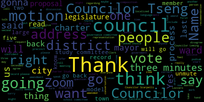
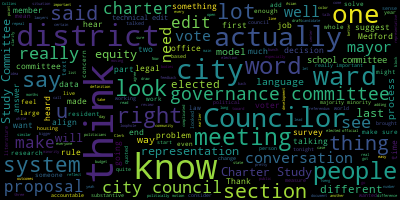
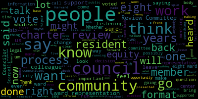
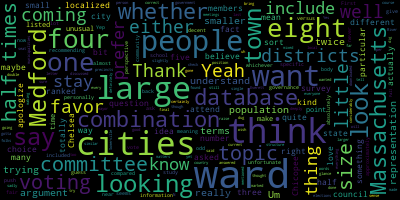
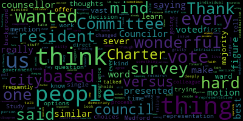
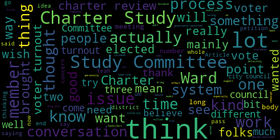
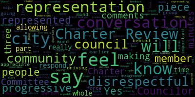

AI-generated transcript of City Council Committee of the Whole 03-04-25
English | español | português | 中国人 | kreyol ayisyen | tiếng việt | ខ្មែរ | русский | عربي | 한국인
Back to all transcripts
Heatmap of speakers
[Bears]: Medford City Council Committee, the whole March 4th, 2025. Mr. Clerk, please call the roll.
[Hurtubise]: Councilor Callahan, Vice President Collins, Councilor Lazzaro, Councilor Leming, Councilor Scarpelli, Councilor Tseng, President Bears.
[Bears]: Present. Seven present, none absent. This meeting is called to order. The action discussion item for tonight's meeting is 24-468 offered by Councilor Tseng, which is a resolution to discuss the draft city charter as amended by the governance committee, and I will go to Councilor Tseng to discuss the paper.
[Tseng]: Thank you. Over the last two months, the governance committee has been reviewing a draft charter developed by the charter study committee and sent to us from the mayor's office. This has been a really exciting process. I know a lot of residents have been engaged in this process over a long time and especially in the last few weeks. You know, this process really will change what Rules underlie our governance, and as I've heard it being put multiple times before, the Charter is a reflection of who we are as a city. I think it's really important to thank the members of the Charter Study Committee for their work over the last few years. Where the city council comes in is where the state law begins, which, you know, using the method that the mayor chose to do charter review. The city council is the body that has to approve any proposal that we sent the state legislature on the text. The legally binding text that the text that will send to the voters starts here and that's the work that we've been doing with our due diligence over the last few months. During those meetings, I made sure to invite members of the Charter Study Committee, members of different bodies that would be affected, such as the School Committee and multiple member bodies to the meetings and to provide feedback, many of whom did provide feedback to us. I'm proud to say that I think the Governance Committee really did consider feedback from all different angles, from different perspectives. We had some real debates in committee about what we bring to this committee, the whole meeting. And I think that the conversation, the discourse that we had was very thoughtful. Now, just to summarize, there are three main buckets of edits that the governance committee made. There are two bigger substantive changes. And then the last bucket are just technical edits to clarify language and to make sure that the language that we had in the draft city charter was legally airtight and wouldn't lead to any loopholes. The two big substantive edits that we made was to adopt a district-based composition for city council to align it with the school committee model that was proposed, and to remove the mayor as the chair of the school committee, keeping the mayor on the school committee as a normal member. I do have some more technical edits going through the city charter in communications with the Collins Center and also in working with folks at Harvard Law, just some technical edits to make sure that we don't slip into any situations where there might be litigation and to make sure that we're fully aligned with state law and that each part of the city charter aligns with each other as well. I have a list of technical edits too. So to start in section 1-3, I would suggest removing the words, not including the Medford public schools, specifically from the definitions of city agency and city office or department head. That's a change that we made at the last meeting on the school committee. And that's a change that was recommended to align us with CELAW. I'd also suggest in section 1-7, the definition section, two edits. One, to add the word new before initiative measure, and to add the words excluding repeal referendum measures at the end of the definition. This brings us in alignment with the rest of the document which we edited. at that last governance committee meeting. It also just clarifies that we do have a new initiative measure process and a repeal referendum process, and those don't overlap. So there's no loophole there. The second edit that I would suggest making to section 1-7 would be to add the word repeal before referendum measure. That's again, just to align what we have there. A technical edit suggestion that I have for section article 3-8 would be to add the word temporarily before the word unable. This is the section of the city charter about what happens with a temporary absence of the mayor in talking to lawyers. It's pretty, there was a pretty big red flag in this section about this potentially giving the city council the power to coup the mayor with a bunch of different legal rules, doctrines for why the section as is would do that. This doesn't reflect the intent of the Charter Study Committee. It doesn't, in our conversation at the Governance Committee, didn't reflect the intent of anyone at that meeting as well. In section 3-10, I have two proposed edits. The first one would be to add the words in bullet point A, so subsection A, add the words, and shall receive compensation as established by ordinance for the office of mayor. That is to clarify something that we had discussed in the governance committee about making sure that someone doing the job of acting mayor for months on end would be paid for that. There's a very similar edit I'd like to make in, I suggest that the committee of the whole make in part B to amend the final clause to end after the sentence to end the sentence after the words section 3-1A and to insert the following. Quote, such person shall not be entitled to have the words candidate for reelection printed against their name on the election ballot for the office of the mayor, but may have these words printed against their name on the election ballot for their original city council position. Such person shall receive such compensation as established by ordinance for the office of mayor. This is just to clarify a potential ambiguity that was raised to me just to make sure that we are keeping with the intentions that we had. So this is just really clearing up a loophole. In section 4-8B, I would suggest replacing the words highest vote getter with candidate receiving the highest number of votes. That's just to align us with legal language. In section 6-4, I would suggest adding that the budget should be required to be posted on the city website. In section 8-4, subsection 3, I would amend the language to read the city budget or school committee budget as a whole or any portion thereof. That also reflects some, the conversation that we had at our last governance committee meeting, just to make sure that the language there is airtight as well, because the language before read the other way. And in Section 9-11, this is the final edit in Section 9-11, I would suggest replacing the words Board of Election Commissioners with City Clerk. That's another, just a technical edit. So with that all being said, and I can email this list around to the City Clerk and to Councilors if need be, I would motion to accept the recommendations of the Governance Committee with these technical edits.
[Bears]: Thank you, Councilor Tseng. I heard a motion to accept the recommendations of the study committee with the technical amendments and refer to regular meeting. Seconded by Councilor Collins. Before we go there, I just wanted to, I have one question or two questions, one from the clerk regarding that 9-11 change. The clerk has said that the certificates of election or appointment do now come from the board of elections commissioners. So is that correct?
[Hurtubise]: Yes. So I would recommend leaving that as is because the certificates of election, when someone is appointed to the city, have to administer the oath of office and when someone is elected, I have to administer the oath of office. But the certificates of election have been coming from the from the Elections Commission since the changeover in 2022. Yeah. Okay. And then
[Bears]: There was one other item where we were, or two other items, sorry, where one, we were supposed to get some recommended language back from the Collins Center. One was for the school committee regarding the section 4-5, subsection B, subsection 1, the language upon the recommendation of the superintendent. We were supposed to get language from school committee council. Did we get that?
[Hurtubise]: Okay.
[Bears]: And then the last one was section 8-1. We requested language from the Collins Center regarding the procedure for legal review of group petitions. I don't think we received any language on that. Okay. So we can follow up. The residency requirement for the boards and commissions. Okay, so if you could add those three items and make sure we get that language back from Count Collins Center, since they didn't get it to us yet, that would be great. And you'll send a list of all of these to the clerk? Great. All right, I will go to, who do I have here? I'll go to Councilor Collins, Councilor Scarpelli, and then we'll go from there, Councilor Collins.
[Collins]: Thank you, President Paris. It's exciting to get to this phase in the process. Just want to begin by thanking the community for advocating for a new charter. This advocacy has been going on for a long time. It predates the specific chapter in the charter review process. Community members, many of whom are in the room tonight, and I'm sure watching on Zoom, Council. Um have been advocating for this before. There was a charter study committee assembled by the mayor. Um I'm excited that I get to vote. Yes on a new charter twice in my time as a city Councilor first a couple years ago, and hopefully again in a couple weeks. I want to thank the Charter Study Committee, especially Chairman Donald for all of your hard work. The count the Collins Center for consulting with the Charter Everybody tuning into this process knows this already, but I think it bears repeating the council's role in this process is not to draft or craft the draft charter, but to review it and to make targeted improvements and adjustments the Charter Study Committee We know they worked really hard, diligently gathering community input, interpreting that as best as they could, creating this long and technical draft. That's no mean feat. And now it is our responsibility, it being passed off to us at this part of the process, to have given it a thorough and earnest review. Our review is not a rubber stamp. but a responsibility that we know we all, none of us take lightly to make adjustments that in our perspective, given our access, given our information, given our perspective as Councilors, to make this draft as strong as it can possibly be for the long-term good of the people that our body governs, for the good of the community. I believe that this draft Excuse me. I believe that this draft charter really does constitute a very major step forward towards a better functioning and more modernized guiding structure for our city. I especially want to shout out the simple fact that this charter would require a review of the charter every 10 years, which is really important. I'm so glad that the draft charter would include a review of itself for going forward, because I think that this process has illustrated how much we need that to happen on a regular cadence. Councilor Tseng, I think, gave a really helpful overview of the two most substantive changes that the Council made in committee. I do believe that these will make our governance better and stronger for the people of Medford. I've said this before in our committee meetings, but I do believe that moving from an all-at-large Councilor system to four district Councilors, plus three at large. I think this is a positive change. This is substantially more localized representation than Medford has ever seen before in its city council. Guaranteeing representation from all four quadrants of the city. while balancing against potential negatives that I do believe could come from having one Councilor from eight small wards such as uncompetitive elections and parochialism. We have had a really substantive back and forth about this issue in particular in these chambers. I'll speak as one Councilor. It's given me a lot to think about. I think that I'm so grateful that the community challenged us to think really, really deeply about this issue of representation. I know that we do not have consensus on this council about what the best system of localized representation will be. And I'm so grateful that my belief is no matter how we go forward, Medford will enjoy more localized representation on the city council than it has before. And that is what the residents deserve. Councilor Tseng has also outlined additional technical edits, which I do think shore up this legal document and resolve unintended ambiguities. That's again, that's a really important part of our responsibility here on the city council. And thank you Chair Tseng for your diligence in making sure that we caught all the nitty gritty. So I am grateful to my colleagues and all members of this process for such earnest participation. I second the motion from Councilor Tseng and I look forward to hearing further comment from my fellow councilors.
[Scarpelli]: Thank you. Councilor Scarpelli. Council President. First, I thank Councilor Tseng to bring this forward, the changes forward, but I appreciate that he has the avenue to reach probably the smartest legal minds in the country at Harvard, but it'd be interesting to see the changes that are made to the call-in center or our legal team to look at what changes are made. I know that You did say a lot, so I'm lost in translation right now because I haven't seen anything. So I think that it's a little premature to bring all these changes that were presented by legal support at Harvard when we had the Collins Center, who are attorneys, that we vetted all of these processes through with them. So I- I love the point of information. I did also work with the Collins Center on this. OK, good. some, right? So I think that, you know, it'd be interesting once we get those, I think that, um, vetted properly again through the call and center to make sure that, uh, the ones that weren't, if they were, um, you know, like I said, I don't, I trust them, but again, that Harvard's not our legal representative to, um, to lead us. And I think that it's important that we make sure we do that. Um, now with the process, the two big changes, I think that, uh, you know, the lesser of, uh, is the mayor, the mayor's position as the president of the other chair of the city of the school committee. Um, I feel strongly that I think she or the mayor's position should be the leader of that, uh, that body and, um, and for many different reasons, but I leave it, I leave that at the will of the voters. Um, but I think what's more important, I think that this council has been in, uh, has been questioned over and over again, that are we making the right decisions for the whole community? Or are we doing this for one base? And when we hear time after time, because I'm sure you got the emails, I'm sure you got the phone calls, I'm sure you got the communication with the community that are very, very perplexed that this council would run on a platform of eight ward representations and then three at large candidates. It's bothersome that the question of equity comes around and gets thrown around easily. And this format clearly is not equitable. To think that this council is going to make a decision, possibly vote for this format, and possibly leave wards and leave parts of our community unrepresented would be a travesty because it's not about this council. As been said before, this is about the council today, the council in five years, the council in 10 years, and the council in 20 years. And being uniformed and giving people the opportunity to run for office. And we talked about all the pluses. I remember because I fought against those pluses, remember? I was against charter review for a long, long time. And it took a lot of talking to different communities, talking to colleagues in different communities and understanding from members of the charter review team and surveys and really understanding the importance of equity and what that meant. And this format that you're proposing and you're changing is an absolute shame to the community that has worked for two years, over 200 meetings, and all identified an eight and three format. We talk about why are people coming out? Why are people not connected to this process? And we identified the fact that we don't have board representation, and the fact that maybe there might be someone in that community that hasn't come out to vote, that re-energizes that community to be part of this process. What an opportunity. Then we talk about running in as an at-large member and how expensive that would be. And how many people, if you look around this reel, we all look the same, most of us. And most of us work together to get funding one way or the other. But to run for an office, you know what it takes? 20, 25,000 possibly. And looking at ward representation opens up the avenues for so many of the underprivileged that would never, ever, ever have the opportunity. So it's befuddling to me that I have openly read the platform of the Our Revolution Method that talked openly about ward representation. Now, I know we could say that no district representation is ward representation. Misleading and not true. Because as members of that organization that have reached out to me to speak on their behalf, they were clearly under the assumption it was eight representatives, every ward representative, big or small, elected population or not. To sit here and think that this process, this change is good, it's good for six people. It's good for their future in the business of politics. You could say it isn't, but if it walks like a duck and quacks like a duck, I've said it, it's a duck. This is self-serving. It's not what the community is asking for. And again and again, someone that might run for re-election and maybe not, you're giving a lot of people a lot of ammunition for one key factor for my colleagues here. You're just not listening to all of our residents. You're not. You had a body that was presented to you that you supported 1,000%, that had over 200 meetings and worked for two years, then sat with professionals with 80 years of experience that presented what this community is crying for. And to sit up here tonight and say, This is so exciting. This seven-member board, six are probably gonna vote for something the rest of the community is drastically against. And you can't say they're not because I'm getting the emails, I'm getting the phone calls. And so are our members that are on the Charter Review Committee. So I beg my fellow councilors. I know we don't see eye to eye. and a lot of things. But I know for sure the base that voted you in, that have reaching out to me, they want the eight ward representation. They want the 11 members. So I'm actually begging for you to please consider voting this down and going back to the original format. And if not, As I've said to many people, I implore that you reach out to the mayor because that is the next step to veto this because what's going to happen is that there's enough negativity out there that when this does go to the people and it does go to the vote, all their hard work is going to go for naught because the intentions of this council seems to be self-serving. And I know that might hurt. You might think it's inflammatory. You might think this is politics and you can cry whatever you want. but it's exactly what it says. What you're doing, it's exactly what it is. They put a lot of work, this committee put a lot of work into this process. And it was clear. And for someone that was so negative about it, and I turned full force around, and I'm sitting here advocating for it to other members of our community, so they can understand. And it's so clear. It is so clear. Eight leaves nobody behind. Think about that. Eight leaves nobody behind. The other option possibly will. When you talk about combining wards, that's still a big area. That still doesn't entice the equity that we've so many times cried for here. We wanna see a more diverse council. This is what you all said. We only have one person of color. I've heard that over and over again. If you look at neighboring communities, you see a group of elected officials that represent their communities because they're giving the opportunity to run for that office without limitations. So again, To be a politician, please vote 6 to 1 and give the people that are running for office against you, give them more ammunition that you're just simply not listening to the residents of the city. You're seeing it over and over and over again. Whether you win a vote or whether you don't, it's still very close. So I'll end with this. This will get voted and moved through. If this goes the way it usually does, it'll be six to one. It'll go to the council meeting, then it'll be voted against six to one, and then it'll go to the mayor. And then again, people will have to gather, people have to rally, right? Then they'll say, Councilor Scarpelli is being negative again. He's starting a group to go against what? To go against what we're doing here and not listening to the residents. Because in every platform that I've been involved in, in this community and helping residents, there's one common denominator. We're not listening. This administration is not listening. Whether it's zoning issues, whether it's override issues, whether it's charter review issues, it's the same cry You're not listening to all 60,000 residents. You're making your decisions on your special interest, and that's it. So, I know what it takes to be a bigger person and say, you know what, look yourself in the mirror and say, not what best for me, George Scapelli, because that's what I was doing when I was sitting back and saying, no, Mr. McDonald, I don't believe in this process. I don't believe in ward representation. When you look yourself in the mirror and say, well, you know what? Look at the variables and how positively it affects the pros and cons. And how could you not want eight representatives? How could you not want all wards represented? So if I offended anybody, I apologize. But again, this is coming from people that have openly said they voted for members of this council and feel like they're not even being heard.
[Bears]: So thank you, Mr. President. Thank you. Any further discussion by members of the council?
[Tseng]: Councilor Tseng? President Bears?, sorry about that. No worries. Thank you. There's a lot to unpack there, but I wanted to start with, let's talk about equity. Because this is a guiding decision behind so much of our city's policies, behind this charter reform in particular. And let's make sure that equity isn't just treated like a slogan. I think we agree about the concerns that there is just one elected person of color in the city, that for decades there's only been one elected person of color in the city. I, you know what, I look in the mirror every morning after I get out of the shower and I see that. And I think, you know what, I ran on a platform the first time I got elected and when I got reelected, I ran on a platform, not just to take the easy answer when it comes to equity, but to examine policies through the lens of equity. And that's a much richer, much deeper, much more complicated conversation. it is easy to say that if we draw smaller districts, that everyone will get represented. But that's not where the conversation has to end with equity. And actually, the conversation can't end there with equity. The conversation has to end with whether the outcomes that a future city council makes reflects that equity in the first place. Now, Research from decades, 40 years of research, have been really loud in saying that it's not enough to draw a majority-minority district. It's not enough to have a Black representative for a Black district or an Asian representative for an Asian district. And that actually drives worse outcomes for minority interests. It really does. When we see that you have one person of color on the city council, and I'm not even talking about this city council, we see that that is the effect of tokenism, that we take the easy way out, that we say that's enough, that we have diversity, that we have equity, that we have inclusion. And I implore the city council and I implore residents at home So look at the research. And there's quite a lot of papers on this. I will break this down, the general concepts really quickly. When you draw districts that are majority minority, the problem is that no one else is accountable to those voters or few people are accountable to those voters. And that's why political scientists and experts, sociologists suggest that we take a compromise approach to determining composition of elected bodies. The idea is that if we want real equitable outcomes, we need to make politicians accountable to more voters, to more different types of voter bases. And I think we luck out with the district proposal. We looked at the, in the governance committee, we looked at the percentages of majority minority, the majority minority share, especially in West Medford and Wellington. between the district model and the word-based model. And there truly is not a major statistical difference. But what that means is if we go to a district model, a district Councilor will be accountable to more minority interests. And I think if we're talking about equity, I think we need to trust the data. We need to trust the science on that one. We also see with equity, it's not just about race. It's about income. It's about the types of housing or lack of housing. And we also see that there is quite a lot of research. It's not just one study that shows that an overfocus on ward representation can heighten those problems of lack of housing development, of a further segregation of housing outcomes. with lower income and working class residents. That's what the data says. Look, I walked into this office, I walked into this situation, actually leaning towards supporting an 8-3 model for representation. And I wasn't married to it. And I was actually open to looking at other models. And I think, as I'm sure councillors will discuss tonight, there are other models that are actually better than any of the proposals that we have on the table. But our political process demands that we choose one of these ones. This is the thing, is when you do more research about this, there is a muddier picture. And it's not to say that district representation is what's going to solve the world. It's not going to say that ward representation is what's going to solve the world. The picture is really complicated. And, you know, talking about the point of this is a political game, and if it quacks like a duck, it probably is a duck. I think that's funny, because we can also look at the data about that. And I'm not convinced that the proposal that we have here, the 4-5 split, is actually more expedient to you know, the certain group of politicians in the city, I actually think the data backs the other way. And so in supporting this amendment, I'm actually likely weakening my own position going forward. And I think it's, you know, really important to also say the most politically expedient decision I could make tonight is to revert to an 8-3 system. But I'm not convinced that that system solves the problems that we see today in our city. I'm not convinced that that would be better than a 4-5 system. And I'm not saying that the 4-5 system, the district system is gonna solve all of our problems, but the 4-5 system has problems that we can solve using other measures. through redistricting, through changing incentives, that we can't solve as easily with a ward-based system. And that's my research. I've spent all day on the phone with people who very strongly support a ward-based system. And we've come to a consensus that there is no perfect system and that it should be my, it's incumbent upon me as an elected official to make the decision that I think is morally right for the city. not the politically expedient one. And, you know, there's a lot to be said. We can delve more into the proposals, but I just wanted to put that out there.
[Bears]: Thank you, Councilor Tseng. Councilor Scarpelli.
[Scarpelli]: Thank you, Mr. President. One thing I concur with my colleague is that this process doesn't stop with this process for equity. but I can guarantee you an eight ward council moves us forward a lot quicker in equity. And as we move forward, the equity builds off of that eight. By not going with the eight, you're limiting that equity. Now it's great when you could take numbers, and my colleague is a brilliant individual, we know that. But I revert back to a very important comment I've made. The residents feel strongly with the 8-3 format, period. What works, what doesn't work, what communities it works in, we can mold whatever we want to fit your narrative. But understand very simply, we've heard from the call-in center, the professionals, for all due respect to my colleague, 80 years of experience between the two of them. We've heard that I believe there's only a handful of councils throughout the commonwealth that aren't based the way of an A3 council. And doing my research and reaching out to those councils that do have that ward representation, it works. The voices are heard. The neighborhoods come out. People are rejuvenated. There's more energy. And to say that this process might hurt my colleague, that's not true at all. You're an incumbent. That's now controlling a base, where now this opens the process of eight wards, depending where we all live. Because it could be that a few of you might be running against each other in a few years. And we can't have that because it's true. So it's a very simple format. It's easy to speak and spin dialogue and understand, but I want you to go back to the most important piece that I brought up and that I implore all of you to listen to. The community has worked very, very hard with the leadership of our Charter Review Committee. They have done years of data. They've done years of door knocking. They've done years of meetings. They've done the work. Not a few weeks in between talking to friends at Harvard. They've done the work. They pulled up the information. They came to us for what their view was with the residents, all of the residents that they queried. They met with an organization that had nothing to gain, just experience, and they shared their opinions. So we can talk as much as we want and spin it as much as we want. The bottom line is this. If you go against the 8-3 representation, if we go against it, you are truly going against what the majority of this community is asking for through the Charter Review Committee. And you are definitely not accelerating the process of equity, period. You could say whatever you wanna say, whatever daddy you wanna say, but I will guarantee you, if we have a member in our community that feels like they need to run and they might be marginalized, it's not gonna work when you have to do it with two wards, that's even difficult. And at large, we know how hard that is. So again, the vote will be the vote. I just hope that my colleagues reconsider and actually go back to November past and remember what you promised your people. Because again, I'm only bringing this up because they're calling me and they're sharing it with me to share this council publicly. So I'll leave you with that. I think it's important that we could spin anything we want, and we can say whatever we want to make it fit whatever narrative we want. But if it's right in front of you, and I won't say duck anymore, if it's right in front of you, and if it's black and white, it's black and white. I think that's been said and heard. I'm sure you've gotten a bunch of emails yourselves, phone calls yourselves, people from the podium, people that were on Zoom in the last couple of meetings, they've shared this. because I haven't heard one person come back and say, hey, Councilor Scarpelli, what a great format, five and four.
[Bears]: So thank you. Thank you, Councilor Scarpelli. Councilor Callahan.
[Callahan]: Thank you. Yeah, I just want to give my kind of perspective on things. First of all, if this were coming into Yeah. Yep. So if this were coming into, because I was not on the governance committee, if this were coming into this body, whether it was eight and three or five and four, four and five, I guess, either way, I would vote in favor. I believe that we want a combination of more localized members as well as at-large members. I think that is what I am for. So either way, whichever of those it was, I would be voting in favor of it. I think it is also fair to say that the survey that the study committee did included a question about combination of wards and at large. It did not ever ask whether that should be four districts or eight wards. A little odd because they are recommending four for school committee and eight for city council. It seems like maybe you include that in your survey so that you can get that information. I personally don't believe that we have any idea how many people in Medford would prefer the eight wards versus how many people in Medford would prefer four districts. I think I can look at the numbers right now, people who want a combination of wards and at large, and you know, I get it that ward in Medford means a very specific thing. I think our wards in Medford are quite small compared to a lot of the other cities. So combination of some sort of localized and at large is 60% of people. I think that is what we are voting on. To stay as is, meaning all at large, 18% of people think we should stay all at large. 17% of people think we should be all wards. you have approximately the same number of people who think it should stay like 20%, 20% almost. It's like 18%, 17% say that it should be all at large, 17% say it should be all ward, and 60% say it should be a combination. I think there's a decent argument to say that something that is near half and half is maybe something that people in Medford want. It's unfortunate that we really have no idea whether the community would prefer eight or four, because that was never asked. So I just want to push back a little bit on this. We know absolutely certainly that everyone in Medford wants eight words. I don't think that that question was ever asked or answered. And, uh, yeah, like I said, I would be in favor of mixed whether it was eight or four. Um, I think going to a slightly larger council is good too. Um, so that's just my position.
[Bears]: Thank you, Councilor Callahan. I'll go to Councilor Lazzaro and then Councilor Collins. Councilor Lazzaro.
[Lazzaro]: Thank you. I just wanted to mention that, though it would be wonderful if we could do this, we can't take a survey of every resident of the city every time we vote on something as a council. That's why we're a representative democracy. We talk about things, we think hard thoughts about the nitty gritty. We do the research, we learn about things. We were elected by the residents to think more deeply about stuff. The vast majority of people that live in the city don't want to have to learn about the intricacies of ward-based representation versus at-large versus a combination versus other options. The same holds for the Charter Study Committee. They did a ton of work. They presented us with some options. We took them. vast majority of the people that voted for us said, hey, we think that based on your background and what you've presented to us about who you are, you're the kind of person that we would like to make these decisions for us. They may not be able to tell us what they think about each individual issue. They're telling us they would like us to look into it and figure it out and make a decision. So similar to what Councilor Callahan was saying, We don't know. We are doing our best here. It would be so wonderful if we had good faith from our neighbors and the residents that we are trying hard to figure out what the best thing is that we can suggest and offer as we make these choices going forward. Um, it would be wonderful if we could pull every single resident of Medford on every single question, but we can't. And so we're just thinking hard about it and trying to figure out what the best choices. Thanks.
[Bears]: Thank you. I'll go to Councilor Collins.
[Collins]: Thank you, President Bears. I appreciate the discussion from my colleagues on this. Um, in this question of who we're talking about, not the only change we've made to the charter, but one of the changes that I think a lot of the community that's paying attention to this issue at all is most delighted to. And I hear it being brought up a lot, what we don't know, what we can't know, what we do know. And I think some of my fellow Councilors have made the point quite well that we cannot purport to know what the community as a monolith knows or feels. I don't believe that we know what the majority of the community thinks about this particular issue specifically. I'm really grateful for the outreach that was done. I think that's informed this process very meaningfully. I'm glad that we have data from the residents that were polled through the Charter Study Committee's process. But I don't think that what we can say is that we know how the community feels about this proposal. I don't think that anybody can say that. I can't say that my fellow councillors have said that they don't feel that they can make that statement. I don't think that anybody can. However, I think what's important for this city council, what feels important to me as a councillor is to focus on what we can know for certain which is that what residents want out of this process is a governance structure that works better than before and gets us closer to what we can know will be better for this community, which is more localized representation that seeks to balance what it seems like what we can extrapolate from the community feedback that we've gotten, which is that most people favor a mixed system, and to balance that with the research and the data statistics that we've gathered in good faith, from various sources, including the Collins Center, including also supplementary studies and research from sources that are renowned and should be respected in the field and certainly shouldn't be condescended in this conversation that are enriching this process. Our responsibility is not to take a vote that will make people closest to us happy with us. Our responsibility is to take the votes that we think are right and best for the community long term, even if it will cost us politically short or long term. The responsibility is to outcomes and not popularity. That is why I have come down in favor of four district Councilors and five at-large Councilors. And I just think not exclusive to this issue, but in general, when we start talking about knowing for certain what the community as a whole feels and believes, the community feedback that we know that we have, the input that we know that we've gotten should always be considered and treated with all of the gravity and meaningfulness that it deserves and I think it does a disservice to the outcomes when we let ourselves believe that what we have heard from the people who are most tuned in and most easy to access and most plugged in to feedback channels in the city, when we let ourselves believe that that is the whole picture, I think we do a disservice to the greater outcomes. And the overall point to me of reinvestigating representation in the city council is to focus the consequences of those outcomes of the people who are least engaged in these processes already, the people that we are least likely to have heard from in this process and in others, people who are least likely to be represented or that we're hearing from in any form. And that's why I think it's so important to way what we know some people feel, many people feel, and to not diminish that feedback whatsoever, to not diminish it as an ingredient in this process whatsoever, but to balance it with what else we know about the consequences of these various strategies. Thank you.
[Bears]: Thank you, Vice President Collins. Councilor Scarpelli and Councilor Callahan. Councilor Scarpelli.
[Scarpelli]: Thank you, Mr. President. So we've heard this over and over again with this council is we were voted for. We were voted to make these decisions. We were, what we did was support a body that would go out to the public to do all the work for us, to do everything that we're looking for. They're just saying that's not happening. They did that. The charter review committee, was given the ability to go out all over the community and get what this community as a whole thought was best for this community, our community. To say that we can't go out and survey the whole community, let's do that. But even to that point, we have a charter review committee that this council voted for, that we pushed through, that we, excuse me, excuse me, I take that back, you're right, we didn't vote for it, but we support it.
[Bears]: I just want to clarify, the council was not involved in the formation of the charter.
[Scarpelli]: Right, so we support it, that we support and we applaud it every time you came up. And I'm sorry, because I'm getting testimony from people on the committee that feel a little slighted from my colleagues' comments. that felt some of the charter members feel that while they're insulted right now for the way that things were presented just now, just to share with you that the idea that that work wasn't done, the work was done. We applauded these members. We applauded the two years. We applauded the over 200 meetings. They went out, went to corner to corner. They got the information that you are saying that we don't have. We have it. We have it. That's what they came back with. They came back with the report that favorably said, unanimously from the people that I've talked to, that it was eight and three. Then you say, you know, well, we were elected to make these decisions. We're minimizing the fact that this elected body understood that there was a charter review committee that went out and did the work. And we sat through maybe four or five meetings, and all of a sudden came back with an idea or a process that you think, six of you think, that that might be the best way to go. Five and four. So it's disingenuous to say that the work wasn't done, that people didn't do their homework, that they didn't listen to people. You're not listening to people. They said it over and over again. that the Charter Review Committee did their homework, they talked to people, they came back. And I'll guarantee you this, maybe we didn't hit 100 out of 100 people, but if you asked 100 people, hey, would you like a city council representative in your neighborhood or Would you want to share with another ward and minimize how important your ward is? Because that's what the questioning is, because that's what I'm hearing. That's what people have said to me. So wait, so saying that possibly my ward won't be represented, that's saying what? That the council doesn't feel that my neighborhood is that important? These are the questions that were asked to me. And what we're hearing tonight is truly a lot of talk, but you haven't answered the questions that's being asked by, when I say 20 out of 20 people that reached out to me, are you doing what the residents are asking for? And you don't need a survey to say that. The people did their homework. Again, if anybody in the Charter Review Committee feels slighted, I hope it's not for me, it's not intended. We appreciate the work that you've done. That's why I unanimously supported your 8-3 format. We went through the process, the exercise with the call-in center. They supported the 8-3, it was very clear. So, excuse me, they didn't support that, but understanding they've shown me enough information that the 8-3 format is what I would support. So again, I just don't think that you're making a decision for what's best for this community and the future of this community when it comes to the elected body. And when you talk about equity, you're looking to see what fits this dialogue for this council. And no matter what you say after this comment that I just made, I'm just telling you, that's the perception that's out to the public. not not the George Scarpelli public, but the public that have reached out to me that normally wouldn't talk to me. So and, you know, I'm just imploring you that I'm sharing this with people that support the six of you have called me and said, Thank you, Council Scarpelli. I'm really taken back with the people that I supported because I was under the impression that it was 83. So
[Bears]: Thank you. Thank you. I knew I have three Councilors, but I just want to go and say, I think what you just said, Councilor Scarpelli, about the people contacting you is healthy. If again, I don't think the issue is that we're not listening people to people. I think the issue is that there are people we disagree with. You know, that's, that's what's at the core here, right? There are people who might agree with me on 95% of what I do. They don't agree with me on this. might disagree with you on 95% of what you do and say, but they agree with you on this. That's democracy. And I'm confident I've had conversations with residents who don't agree with me on this, residents who do agree with me on this, members of the Charter Study Committee who disagree with me on this, but don't think I'm a bad person for having a different opinion. And that's what I think healthy civic discourse is about. And I'm not saying, and I'm not saying you're saying I'm a person, but you know, and there are going to be people who for this is the most important thing. And they had an assumption that I felt a way that the platform didn't say. And then I don't think I said, never said there shall be eight and three. It was not written that way. There'll be people who this is their most important thing. And they don't believe that that's the interpretation and we're going to disagree. And we're going to have a conversation, I think, and we're going to get through it. And there's going to be people who aren't going to want to have that conversation and aren't going to be happy with me and aren't going to support me in the future. And there are people who are going to feel otherwise and I'm confident that the body of work that we do collectively and the individual work that we all do speaks to all of our roles and if the voters disagree. bless them and thank them because that is their right. And maybe you're right, maybe all six of us will be out of here because people don't like that we made this choice. And maybe all six of us might not even vote for it. And maybe we'll get thrown in the bag with everyone else, even if we did disagree on this or had different opinions on this. And I just want to note for the record, I didn't propose five and four. I came to the council I put out to the public a different proposal, my colleagues felt it should be adjusted, it was adjusted. And I don't think, and I really, the only piece of this that I really have a struggle with is that idea that We all knew what the process was. There would be a charter study committee that would put forward a proposal. This council would review and amend that proposal. The mayor would review and amend that proposal. The mayor got to make changes on her own, not in this meeting, not with public comment, not in front of everyone else. She'll get to make that choice after we send her what we send up as well in terms of whether she wants to support it or not. But again, this is the process this council was elected and is legally required to review the proposal. And this council went through an extensive process and made what I believe to be adjustments to 10% of the content of this charter. And I'm just going to close there I have more to say, but I'm going to go to the rest of my fellow Councilors first but it just really on those points, you know, It's not that we're not listening. It's that we don't agree with some people. Some people don't agree with me and they don't agree with some others of us for multitude of reasons. And I'm very confident that we can work through those disagreements. Councilor Callahan.
[Callahan]: Thank you. I actually wanted to bring up a totally different topic, the topic of ranked choice voting for single seat elections. So that would be any districts or wards as well as the mayor. And I apologize that I did not attend the final and I don't know whether this was discussed. I was not on the committee. I did try to attend the other two meetings, but I would love to raise the topic. Um, and here. From folks about the topic of ranked choice voting.
[Bears]: Thank you. Um, Councilor Kelly and and I will go to multi-member districts, proportional bodies, ranked choice voting. Some of these were things that I brought up in my conversations with the Charter Study Committee. If this had a ranked choice voting element to the Ward and District, to the eight and three model, I would feel much more confident about the upsides of that model and much less confident about the downsides. But from the conversations that we had with the CSC and the Collins Center, essentially they said, because we're going through the special act process, things that the legislature has not approved before, We should not include them because they're more likely to slow down the process of moving through the legislature or that the legislature is likely to not allow them at all. And my understanding is that the places that do have ranked choice voting did so through home rule processes, and not through special act processes so that's my understanding of the discussion I don't know if Councilor Tseng if you have a further summary.
[Tseng]: No, I think that's, that's about it.
[Bears]: Yeah, so there's kind of a constriction on the models we're able to look at because of the Special Act process and the need for approval from the legislature, especially in a timely manner. I had Councilor Collins and Councilor Lembing. No, sorry, Council Lazzaro.
[Lazzaro]: Me first, thank you. I wanted to mention a couple of things. The first being that similar to what my colleagues have mentioned that we can sometimes disagree with our constituents or people that we frequently agree with. I think there were even moments when the Charter Study Committee had disagreements with some of the results of the survey and didn't even include some elements of the survey that were respondents to the survey said they wanted one thing. That wasn't what the recommendation was because of the committee's experience and their thoughts and their opinions and what they wanted to see in the charter, and so that wasn't included. These things were also already done. That is similar to what we are also doing. These things are happening in the process, throughout the process. That's one thing. Another thing I wanted to say is that I think like changing our mind as people who work in politics and government is a wonderful thing to do. And I mean, my colleague saying that he's changed his mind on such a in such a clear and concrete way is amazing. And I have changed my mind 87 times on this topic. I still, I change my mind every five minutes. I think that I am going to probably end up saying that I think it's, I think I will vote for Ward-based 8 and 3 only because I because that's the main reason being because I talked to a number of people in Malden where they have word-based counsellors and the people that I've talked to who know their word counsellor have had positive experiences with that. They like their word-based counsellor, they like having direct access to them. I presented that question to people in a direct way and with no like kind of background, and they said, oh, yeah, I really like it. And that was it. And I said, wow, that's OK. That was a very valuable piece of data for me. Since you can't ask anybody in Medford what that's like because we've never had that, I just felt like that was useful. So it's really, really hard to tell for a city that's never had this form of government before. I also think it's very frustrating when the discourse is, it's gonna be six and one. When people keep forgetting that when we voted about this in committee, I voted with Councilor Scarpelli. Nobody remembers that. We are not a monolith. We have frequently been voting differently from each other. Thank you.
[Bears]: Some might call that spin. What are Councilors saying?
[Tseng]: Thank you. I thought someone else was in queue for me, but I'll go. I think, you know, I hear what Councilor Lazzaro is hearing too. That is something I've heard from people in different cities. Although I have to say, I hear equally from people who live in cities with districts instead of wards that they also feel the same, that they also feel like they have a direct line to their Councilor. Something that came up in a phone call today was that the wards don't necessarily align with the neighborhoods of the city as well. And so at the edges, all in all, they make sense. But at the edges, sometimes they can be arbitrary because we need to get the math to work out. And then this was from someone you know this concern was from someone who is leaning towards word representation at the start of the call and you know he brought up the fact that. he lives in one ward and feels like he's more of a resident of the other ward because that's where he goes to do his shopping and that's where things happen for him. And I think a strength for me of the district system is that you at least have, and we can disagree about this, this is just an open conversation about policy, but strength of the district system for me is that I think most people will fall into a district that they feel a part of. Whereas you risk, with ward representation people on the margins, feeling like they're not really a member of that ward because they live one street over. And people who, certain wards might vote certain ways, and they might feel politically isolated in that sense as well, and not being able to run for office because of that. It's just a complicated debate. There's no right or wrong answer. It's all imperfect answers. I another concern I've heard, and I feel is compelling, and that ties to this is to is that the wind count for, you know, getting a Councilor elected in one ward might be dramatically different from getting a Councilor elected in another word. And, you know, we've heard that perhaps moving toward representation will ease the problem, because, because there's more local engagement but That Medford is a unique city to, we have one word that's essentially half the university. We have a ward, that is half apartment blocks, and that in itself is a whole other challenge when it comes to campaigning to. And I think part of what's affecting my decision. leaning towards district over ward is that I don't think it's fair for one Councilor to be elected with, you know, 200 votes and another Councilor to need a thousand votes to get elected. We actually see that happening at the Senate, right? There's a lot of complaints about how the U.S. Senate determines representation via geography more than representation via people who live and engage with the process. And even though our wards and precincts are nominally drawn to be quite even a number, that's not reflected in other metrics in terms of who people are engaging for civic services, who's registered to vote, who's on the city census, right? All those numbers are different. And so that's something I think our committee talked about in the governance committee, but something that we should consider as well. moving forward. And, you know, I mean, I've received constituent requests from top students, but by and large, their requests are with the Tufts administration, and not us. And I think, you know, I've, I've heard about equity of workload. And that's just, you know, Medford is a unique city in that sense. There's much more to say. I mean, I've heard a lot said about the survey that was conducted as well. And, you know, I mean, I did surveys for a few years, for four years as a job. And, you know, surveys are hard to design. There's a very exact science to them. And, you know, I appreciate that our Charter Study Committee did a survey. I think it's way better that they did a survey than not to have this information. I think the risk is letting the survey dictate every decision that we make. I think it can inform our decisions. But as Councilor Callahan brought up, the questions aren't all precise, right? There are 663 respondents. Does that look like the city of Medford? I know the Charter Study Committee did actually work really hard to try to reach constituencies that normally aren't reached in the political process. Um, still, we see that the survey is very stacked towards homeowners in a way that is nowhere representative of our city as a whole. It's stacked towards, you know, It's stacked against people of color as well. And I think those are, you know, things to consider when we talk about the survey you know it's important to me as someone who's worked in the field before to treat it with nuance. Again, let's not throw it away. It's helpful, but it's, we have to be careful when we analyze the data as well. Um, something you know, Councilor Collins mentioned to to all of us how their residents who aren't completely in the know about charter review as well. And I've actually had Those are a lot of the conversations that I've been having too, is me going to, for example, Asian community events and talking to residents about what I'm doing this year on the city council. And obviously charter review has been the main thing on my docket for the last two months. And when they hear about it, they're like, why are you changing it at all? There's actually quite a lot of that. A lot of people don't understand that actually an all at large system isn't great. And I still think it's not great. And I think, actually, all at large, it's the worst system that we could have. But there are people out there who aren't dissatisfied with things how they are and who we just have to have a real deep conversation about. And I think that's something. It's like when we talk about engaging the public on these issues, we need to engage with a deep conversation. That's what democracy actually looks like, is when we have those roundtable discussions at community events. And sometimes they might lead us to one answer. Sometimes they might lead us to other answers. That's natural. And in democracy, not everyone agrees. So I think those are just things to consider. And I think on the role of it's been brought up that what we're doing is not necessarily respectful of the Charter Study Committee, but I have to say, from the way I see it, is that we're adding to the product of the Charter Study Committee. We haven't, as Councilor Collins noted earlier tonight, we haven't rewritten, but besides, you know, the proposals we've talked, the self-substantive edits that we're talking about tonight, 90% of the charter is exactly the same document, if not 95%. And I know that because I went through line by line last week and made red line edits. And substantively, most of the ideas that are in there, again, 90% of the ideas that are in there are in the version of the document before us tonight. Now, where I see our role is coming in is due diligence. It's us doing the diligent review of the proposals, us adding in the really important experience of being city councilors ourselves, seeing the job in action and knowing how it works. It is in reviewing the literature, again, the voting rights literature, the civil rights literature, the urban development, housing, suburban development literature out there that that we heard from our governance committee didn't get covered in the charter study committees, you know, meeting in their discussions. That's fine. That's why we, you know, that's why we have a role in this as well. That's why our governance committee reviewed the proposals so thoroughly, but there's lots to be said. So I don't want to monopolize time.
[Bears]: Thank you. Are there any of the councillors would like to speak at this time? Seeing none, I'm going to share my viewpoint at this point. First thing I wanna go around us and is disagreeing can be hard and there'll be hard feelings and people won't be happy because someone disagreed with them on something that they didn't expect them to disagree with them on. And we're gonna work through that. I wanna bring us back to in general, and this is my five bullet points. If we take the sum total of the survey and what the Charter Study Committee brought us for public process, and to be honest, my own conversations over the last five years, in general, this proposal reflects a consensus of the people. I think both the Charter Study Committee proposal and the amended proposal. It's to keep a mayor council form of government, no city manager, we're not doing that. To have a balance of powers where the council is slightly stronger and the mayor is slightly less stronger, but to maintain a strong mayor weak council system, which both do. To have hybrid representation for the council and the school committee, meaning some at large and some localized. to create a clear document that is modern and that residents can access and read when they wanna understand what the foundational document of our community is. And quite frankly, that there would be less mayoral involvement in the school committee. That seems pretty clear as well, both from my conversations and the discussion we've had and from the Charter Study Committee's materials and report, which I have read the whole thing a couple of times. So that's what the people seem to want. Now, I think both of these proposals reflect that. On the specifics, I also wanna just talk about the process really quickly that when we talk about this council's involvement, I think in addition to whatever anyone else wants to bring up, this is also the most diverse council with the most women, the youngest, with the first person of color under this form of government, and I believe under the last form of government. And I think that should be taken into account as well. I believe Councilor Tseng is the first person of color to vote in this process so far, from Sim to Stern. I think that should be accounted for as well. When we talk about the proposal of what does hybrid representation look like on both bodies. Again, I came in with a different thought. I thought, wow, I really like what the charter study committee proposed for the school committee. I think it works for the council. Let's do it. I was summarily told from all sides that I was wrong. And we have a different proposal in front of us, which is five at-large Councilors and four district Councilors. Am I unhappy that what I thought was a good idea was not moved ahead? I might be. But the reason I think the principle around how I feel about the localized and at-large representation and hybrid representation on the council is one of balance. There are costs and benefits to every decision. And I believe that this model minimizes the costs. of more localized representation and maximizes the benefits. The core benefit we've heard is this question of equity. And I think Councilor Tseng really spoke to maximizing that this can maximize that benefit. There are real costs when we talk about the localized representation. I also have talked to councillors in many communities, district and ward, both hybrid communities. And they do talk about some of the downsides, seats that go with an incumbent for 10, 20, 30 years, almost always unchallenged. That happens. They talk about maybe it's not formally in the charter that a ward Councilor gets a power, but there's informal power that comes through process and relationship with the mayor where a ward Councilor or a localized Councilor in any model district or ward ends up having significantly more say in something that's going on in their district or ward than the other members of the council. And maybe something never even gets to the other Councilors. There is no consideration by everybody. And that's what has happened in some communities. People have talked to me about that. As I noted, I think because we're going through the special act process, there are a lot of options that could have mitigated these costs. like a ranked choice model, or looking at multi-member districts, or looking at proportional representation. Councilor Tseng cited social science research, best practices, and I won't reiterate it, but just to say again, that looking at those other ways of voting, like a ranked choice model, like multi-member districts. Those are ways to solve the costs that are associated with localized representation and preserve the benefits. They're not tools available to us because of the process that we're going through. I'm just gonna finish and remind everyone and say that by and large, from every conversation that I've had and from what the Charter Study Committee report said, people want a charter that keeps the mayor council form of government. that slightly strengthens the council but maintains a strong mayor weak council form of government. That is a clear document that is modern and easy for people to access and understand the foundation of our community's governance. That there is less mayoral involvement in the school committee and that there's hybrid representation for both the council and the school committee. And I am confidently happy to say that this proposal, if the amendment voted by Councilor Tseng is, or proposed by Councilor Tseng has moved to the regular meeting, and if the council at its regular meeting refers us to the mayor, that it fulfills those principles. We may disagree on specifics. Anyone who disagrees with me, Call me, email me. I know some folks have tried to get in touch today. I've had a personal issue today. And I apologize, I couldn't respond to people today. I will try to as we move forward, as I move through this myself. I've talked to a lot of people about this. Anywho, but there has been some today, a few, who've contacted me today. And I'm just gonna say at the end of this that I feel that sometimes doing the right thing, what we believe to be the right thing is hard. Sometimes it's not what our friends want or what the people who are most active want or what our colleagues want, but sometimes we still have to do it. I'm confident that as amended and referred out, this charter will pass. with the voters because I don't think the voters are going to throw the baby out with the bathwater. I really don't. And quite frankly, I hope as I will, and as I think many others will, that even though we didn't all get everything that we wanted to see in this charter, those of us who believe in changing this charter will work together to get this done and not put it into a political process and you say it gives ammunition to whomever or whatever. I really hope that we can all work together and do that because I think the voters know that this reflects what they've said they'd like to see from a charter change. And I think we can all work together to fulfill that and have a new charter in effect in 2027 for the 2027 elections. So that's what I'll be doing. That's where I stand. And to those who are frustrated or angry or confused or feel that I don't have not, that this wasn't the way that I would approach this. I'm happy to talk to you and I think we can work through it. Thank you. Councilor Leming.
[Leming]: Thank you. Apologies, I've been sitting here silently this whole time just listening to the discourse. So I just did feel the need to put my own thoughts out there. I've been kind of hesitant to do this. do this at previous meetings like at the Governance Committee mainly because I'm not a voting member on those and partially because I think that the more the more kind of drama that comes out of this process, I think the less likely it is that people be inclined to vote on it. So my A lot of my conversations have taken place with, you know, I've called up individual members of the Charter Study Committee to try to get, have a conversation with them about merits, the ins and out of different issues. And I've been very grateful in instances where, you know, we could talk about like the actual issues, like if I vote on a certain part of the charter, if I vote one way or the other, what will be the best outcome in practice? I can't have that same conversation with everybody, but for the folks who I can have reasonable disagreements with and good conversations about the issues, I'm very grateful. I was a member of the Medford Charter Review Coalition back in 2022, and I was one of the early members of the Charter Study Committee. I stepped down after a couple of months when I started my city council campaign. But the point is that seeing some form of charter review pass is very important to me personally. And I think that if you you know, if you don't actually want this to pass, uh, the voters, the key, what you do is you make this as dramatic as possible. And you, uh, just try to inflame tension so much that you come up with a pretense to go against it. And that's not something I want to do. I, I honestly think that the five, four system or the eight, three system, um, would be an improvement over what we have now. My view is that I, I think the more important thing than either of those systems is getting the component of the charter whereby it's reviewed once every 10 years, because that way, if we end up passing 5-4, for instance, and we find out that it doesn't work as well as folks thought or 8-3, then the charter's reviewed once every 10 years, you can come back with a recommendation and then you can end up passing something new. I do think it would be harder to go from 8-3 to 5-4 and cut two councillors off than it would be to expand from 9 to 11. So that is one part of my calculus. I also do actually agree that, you know, based on the conversations I've had that the 8.3 model is the most popular among the folks I've talked with. But I think that's also mainly because nothing else has really been presented as an option or kind of gone out into the public discourse. And I've had the experience multiple times where I've had folks who I've worked with in the past, they'll send me an email saying, please go for the 8.3 system, call them up, have a conversation with them. And then I bring up some of my concerns with it. And they'll say, OK, no, I see where you're coming from. It's just the fact that they, I think, At the end of the day there, they were saying that they really just want to get away from the seven at large system and go with something else. So the issues, I've been a bit disappointed with the conversations that we've had in these chambers mainly because it's just gotten so politicized like so many other issues that it's kind of impossible to actually talk about the issues themselves. I've also been, thinking very strongly about, you know, the potential of offending people that I used to work with burning bridges. And none of those are really, none of those are really considerations of like the central question of what will actually work out best for the city moving forward, like what practically will work out. With the 8-3 system, I think it's the most popular, it's the most intuitive. It's what folks have been emailing me about. My concern with it has to do mainly with turnout. So I have an Excel spreadsheet in front of me with the 2021 municipal elections turnout. There's like a there's like a 3.1 to one ratio between the turnout of voters in Ward three to the voters in Ward seven. And that reflects that Senate issue where like a Senator elected in California was elected with 36 million to represent 36 million voters, whereas one in Wyoming, like less than a million. With the district system, it's mitigated a little bit. So the Ward, I believe the, let's see, I have my, so the ratio between the highest average turnout district and the lowest average turnout district will be like 1.9 to one. So there is that issue there. So that's mainly what I'm thinking about. I think that, There are there were philosophical differences in the approach of the Charter Study Committee versus the approach that Council has in the sense that I think the Charter Study Committee was looking at what is kind of like theoretically the best model, like almost from a political science perspective, like what is, so, and I think that a lot of what Councilors are thinking about is what will practically happen, like what will be the outcome in effect. And I think that's where a lot of this discrepancy is coming from between sort of the two approaches. I think they're both legitimate. but there does tend to be a little bit of, does tend to be a little bit of not seeing eye to eye there. So now there's a bit of a rambling speech right there, but I just wanted to, you know, I just wanted to offer my thoughts. I mean, this, this is an issue that, that means a lot to me. And it's something that I've thought about a lot over the past two years. It's something I thought about a lot when campaigning. So, you know, just because I've been keeping my mouth shut most of the time, it doesn't mean I haven't been thinking about it a lot.
[Bears]: So thank you. Thank you, Councilor Leming. Do any further comments by members of the council? Seeing none, Mr. Clerk, could you read, read, sorry, Councilor Lazzaro. We do have a motion on the floor. I was gonna have the clerk read it, but this is, I'll go to you.
[Lazzaro]: I would like to offer a motion to, I would like to vote in favor of all of Councilor Tseng's amendments, but I would like to sever one, Is that possible?
[Bears]: Yeah, we could do that. We could also if this is a motion to amend Councilor Sagan's motion.
[Unidentified]: Yeah.
[Bears]: If he doesn't want it, we could vote on the proposal to amend the motion, whichever one you prefer. So are you essentially proposing to have a vote on the representation?
[Lazzaro]: Yes, separately. motion to sever the council representation portion of the... There's a motion to sever and have a vote, separate vote on council.
[Bears]: I'm trying to say that we could, there's two ways we could do this. We could sever out the compensation or Councilor Zizaro could vote to try to amend this, could say, I would like to amend this to eight words and three at large, and we could vote on that amendment. Okay, so there's a motion from Council Lazzaro to sever the vote on adopting the Governance Committee's recommendation on the composition of the Council with a second from Councilor Leming. All those in favor? Opposed? Is that a yes or? You oppose? Okay. So there's a vote to sever. Yeah, so council is our move to sever the vote to adopt the governance committee's recommendation regarding council composition. And I'm just gonna call a roll on that. Seconded by Councilor Leming, yes. So this means we would vote on all of the other recommendations and then, or vote on the composition and then all the other ones, there'd be two separate votes. Mr. Clerk, please call the roll. Yeah, this is on the motion to sever. So if you vote yes, you vote to sever.
[Hurtubise]: Vice president Collins.
[Bears]: This is the vote to sever. So all this means is that we would have two separate votes.
[Hurtubise]: Councilor Lazzaro?
[Callahan]: Yes.
[Hurtubise]: Councilor Leming? Yes. Councilor Scarpelli? No. Councilor Tseng? No. President Bears?
[Bears]: On the day of my daughter's wedding. Come to me. Yes. So that means that the motion is severed. And we will have two votes. So just in case anyone wondered, I'm voting for us to have a special specific vote on this specific item. Just so in case people say later, I'm a dictator, I'm not. I'm gonna wait for the clerk. All right, motion severed. We'll start with the council composition. So there's a motion. We're gonna do it, but I'm gonna just... We will have public participation on the motion. Now that the motion is severed, I wanna reread. So it's two motions now. So I wanna make sure that we know what we're talking about. So the first motion is the motion to adopt the governance committee's recommendation on the council composition, which is a five at large for district. A vote yes is a vote to say yes to five at large and four district. A vote no is to say no to five at large and four district. That is what we're talking about now. Then we will talk about all the other amendments. Is there any further discussion by members of the council on this motion? Seeing none, we'll go to public participation. This is about council composition only, and then we will have comment on the other items. Please raise your hands on Zoom or come to the podium in person. Name and address for the record. One second here. And you will have three minutes and we'll go to you at the podium. Name and address for the record.
[Milva McDonald]: Milva McDonald, 61 Monument Street. I'm going to try to talk fast. There was a lot of things said about the committee, so I just want to address a few of those. I may have misunderstood, but I thought I heard someone say that the Charter Study Committee left information out of the survey that we didn't want to include. So if I misunderstood that, I would like, please correct me. But I would just want to say, if you have that impression, please come and talk to me. Because as far as I know, it is absolutely not true. I also just wanted to say, and this has been said before, district representation was not asked about because it does not happen in Massachusetts on city councils. And there have been references by Councilors to communities that have it. And I would love to hear the names of them other than Boston and Worcester. Boston is essentially not comparable. State law even separates it out from other municipalities. And Worcester is the second largest city in the state. So I am truly interested in hearing about the other communities that have it on city council. Ward representation has a definition that is understood. People know what it means. So when all of you ran on it, that's what they understood. When all of you have said for five years, 100% in favor of ward representation, when you said to us in interviews that you were in favor of ward representation, everybody knew what you meant. So the reason it wasn't asked was because it wasn't on our radar, because it's not really done. When the school committee subcommittee started digging in, they found that it is, there are a few school committees that have it. And I won't go into the, I've said it before, it's in the final report, why it was considered to school committee, but not city council. I also wanna say, this is not like the Senate. The problem with the Senate of our country is that you have senators who represent very small numbers of people and others who represent massive numbers of people who have the same power. each ward representative would represent the same number of people. So you may have a problem with the fact that some wards have low voter turnout and ward three that has high voter turnout has had a disproportionate number of representation. And I personally don't think that's an accident, but please don't say it's like the Senate because it's not. The demographic research that has been done is great, but the demographics will change. And this charter is going to be in place for, if it passes, for at least 12 years. If you're confident that the demographics are going to be exactly the same and the district method will serve, will fix whatever you think ward representation won't, That makes sense, but I don't think, okay. I don't think any of us think that demographics are gonna stay the same. The housing studies that have been mentioned, we also addressed that. If there are more, I want to see them. Please show them to me. There's one study that we were able to find. I've asked repeatedly, several people, no one has been able to produce anything but that one study, which is not very conclusive. So, and just one more thing. It has been said, no system is perfect. This isn't a moral issue. This isn't something, there's no perfect system. So a district system is not gonna be perfect either, but you're willing to ignore your constituents because on the idea that this is some moral issue, that it's right. And I don't understand that, because charter review is not easy. There are a lot more stops that this charter has to go to after you. The last one is the voters. And people have talked about word representation in the city for years. It was the biggest issue. When we talked to people, that is what they talked about. So, I don't understand why you would abandon that when you have all supported it in the past and your constituents are asking you for it. Thank you.
[Bears]: Thank you. I'm going to go to Zoom, Glenn Dixon. Name and address for the record. You have three minutes and I am going to try to hold closer to the three minutes going forward.
[Glenn Dixon]: Glenn Dixon, 61 Monument Street. I would just like to say that the majority at large in your new proposal nine, five and four, still the majority of the Councilors will be at large. So that disempowers the districts. They won't be able to overpower the majority at large, the at large Councilors. And those at large Councilors are again gonna get the most votes from the same districts that they've been getting, awards that they've been getting for years. And so, those at-large Councilors are going to mostly be from the same districts where they've always been from. Now, let's see. Nova made a lot of the points that I was going to make. The, yeah. Yeah, I just don't, I don't really even understand your reasons for going to four districts instead of seven. None of, you haven't really given any compelling reasons in my opinion. You know, there's, you talk about it being like the Senate. It's not like the Senate, as Melva said. All the wards are the same size. So regardless of how many people vote, they're representing the same number of people. So it's, I don't know, I can't understand why you keep saying that. And the thing about, yeah, I think those are my main points, that it's still going to be majority at large Councilors with your proposal, and that just makes no sense to me. If you go to wards, you'll have three at large, and then the wards will have the, the majority, and that makes more sense. I do not understand this, keeping the majority at large. Thank you, that's all I have to say.
[Bears]: Thank you. The address record you have, three minutes.
[Giovino]: Ron Givino, 326 East Border Road, Medford, two-year member of the Charter Review Committee, chairperson of the Ward Representation Committee. I ask your indulgence. A lot has been added here. I'm going to try to get to the three But if I go a little bit older, I'd appreciate it. We took this very seriously. I believe board representation is the most symbolic way we can show change in this city. When we talked, surveys were a small piece of our decision. When we talked with Councilor Callahan, she told us that she was undecided. She told us she had concerns, and she told us what those concerns were. She did say that, in general, she was in favor of a hybrid system. When we talked to President Bears, he told us he was worried about ward representation might create more dysfunction as Councilors may only vote on things that improve their ward instead of focusing on the whole city, and legitimately had questions about ward authority and needed more information. When we talked to Councilor Tseng, Councilor Tseng said he was in favor of ward representation, citing the benefits of representation by ward would help give more diverse, inclusive community government. A ward system is better than what we have now. He commented that Medford has the smallest council for the size of the city and increasing the size of the wards would make the council more efficient. When we talked to Councilor Collins in an interview I was present at, she said, She was in favor of ward hybrid representation, citing the benefits of representation by ward would help give more diverse and equitable community government. She thinks ward representation is appropriate and loves the idea. Having ward-based reps would be a huge improvement. She also agrees that ward representation makes campaigning less financially challenging. when we talked to Councilor Lazzaro. She said ward representation for city council was important. Diversity of Medford is not yet represented in our city government. To save some time, I direct you all to an article on the Emily for Medford site on diversity, the searing pain of editing and Medford's city charter. That will give you a more in-depth view on her, which sounds like she's in favor still of ward representation. The mayor has made her statement by giving you her version, which leaves ward representation unamended. I want to talk about Councilor Leming, who said- You have 30 seconds, Ron. Excuse me? You have 30 seconds and I'll give you 15 more because we just talked. Thank you. On his blog page. right from his blog page. Anyone who thinks about charter review habitually has a strong opinion about some specific aspect. Personally, I think city council composition. The lack of board representation in Medford is one area that I believe is not a benefit to the city. It makes the city council homogenous and has historically focused resources in an imbalanced way. I'm gonna skip a little bit. That being said, says Council Lemmy, if I were elected, and the Medford Charter Study Committee recommended some change that I personally disagreed with. What would I do? In all likelihood, I'd side with the Medford Charter Study Committee. This is partially because I worked with them and trust them to do their job. It's also because I've seen city councilors in the past reject expert advice and public feedback and call it independent thinking. If I were to write a paper on a topic like chemistry or medieval Iranian art or number theory, it would, it would would full of independent thinking. It just wouldn't be terribly good. Thank you. We're, we're a minute over.
[Bears]: Thank you. Ron, could you let us know when those interviews happened?
[Giovino]: I can get you the dates. Thank you. That article I just read was September 24th, prior to Councilor Leming's election to the city council. I have the dates as well. And the documentary reports are on the public file. Thank you.
[Bears]: And we don't have it that way. We can't give people our time. In public participation? No, we can't. So I do have two members of the council who would like to comment, but I did want to note too, and Anna may have more information on this. Excuse me, if we could take conversations outside, if we're going to have them. Thank you. Thank you. If you want to take it outside and then come back in after you've discussed it, that's welcome. Thank you. So, first I want to say to Zach on zoom if you could please add a last name last time I unmuted someone who did not have a last name I regretted it please add your last name to your name on zoom to. Melvin McDonald's question about other cities that have districts in addition to Boston and Worcester Lowell has districts, Lawrence has districts, Methuen has districts, Amesbury has districts, these are all on the city council I'm reading their websites. The town acting as the city of barn city acting as a town of Barnesville has districts, the city acting as the town of Randolph has districts, the city acting as the town of Amherst has districts and Framingham, Massachusetts also has districts so those are all cities who have districts that are a combination of precincts or wards. Yes, I'd have to do a little bit more research. Yes. Methuen right here it's multiple precincts combined into districts. That's the city of Methuen. Yeah. The town of Amherst also has that and that's a town but it's a city government form act labeled as a town. So I just wanted to put that out there. I'm going to go to Councilor Leming and then Councilor Tseng. Councilor Leming. I'd like to keep it brief so we can move into more public comment. Thank you.
[Leming]: Yeah, I mean, I did write a blog post during my campaign, which Mr. Giovino brought up. So again, a lot of my silence on this Like, I think most other Councilors, especially those on the governance committee have said a lot more about a lot of different issues. And I definitely said a lot of comments about Article 8, for instance, during the last governance committee meeting. But otherwise, I've... tried to stay out of this for the most part. I was originally the person who suggested the 5-4 model, largely because I thought that keeping it, I didn't support the 7-3, and I thought it was a good compromise between the ward-based system and what Council President Bears proposed. So the way I viewed it was as a good compromise between the two systems. Two, I think that the Chair of the Charter Study Committee just now brought up a very good point, which is that the comparison to the Senate is a little more nuanced. It is a bit of an extreme example, mainly because the wards are do have approximately equal population, whereas Senate districts are very, very disproportionate. But the point about voter turnout was something that, come on, just, guys.
[Bears]: OK. Oh, sorry. We can, we'll hold. If we're going to have private discussions, can we please take them out of the room? Thank you.
[Leming]: So I think the point about voter turnout does need to be addressed because during, I mean, during my campaign, I was very, I was convinced that voter turnout was primarily due to engagement, self-fulfilling prophecies. And I do, I think that that's definitely true to an extent. I think that is a fact that is definitely a factor. Ward three has higher voter turnout because they feel a lot more connected to the high numbers of Councilors that have been elected out of there. And that's very true. And Ward 7, you know, so voter turnout does turn out to be a self-fulfilling prophecy. The thing is that I don't think that ward representation would actually solve the voter turnout issue, and that's because of the different institutions that are present in the different wards. Ward 4 has a lot of tough students who, a lot of them don't even register to vote locally. Ward 7 has a lot of high-rise apartment buildings that, city council candidates can't actually physically access. So the voter turnouts for single family homes is, I think it's just inherently biased to have more people who vote in municipal elections. One thing I will say with the Charter Study Committee is that I still have good relationships with most of the people on there personally. I worked with them, I respect them, I feel like I can have a conversation with them. And when I wrote the blog post saying I would support them, an effort to put some degree of faith in their work to, you know, to raise the status of what they were doing. Because I, you know, I did work with three of them on the Charter Review Coalition, and I knew that they just wanted to see, that they wanted to see it, some form of charter review pass. I've, there have been a, small number of members that have said things that I wish they did not, that I wish they didn't say in public. One member in particular put out a death threat against a sitting elected official and said that she hates most of council and 95% of our supporters. And so when she was saying those things, and I felt like I was trying, especially in the beginning of this term, to support the work of the Charter Study Committee, I just felt like that was a betrayal of that trust. And I just wish that had never happened. And I think that the vast majority of the work of the people on the committee has been very admirable. But yeah, once again, I think I've been talking for a bit too long here. So I apologize for that. But I've had a lot of thoughts on the way that this whole process has gone down. And I have largely kept silent because I just think that more drama won't do it any favors. And I do want to see this pass. So thank you.
[Tseng]: Thank you, Councilor Tseng. I'll be very brief, just because I know we have more public comment. My words were quoted. They were quoted accurately. They were quoted especially accurately when Mr. Givino said that I said Ward was better than At-Large as a system, because that's the context in which I said those things. My words were quoted accurately when I said that we need a bigger council. And that was actually one of the hesitations I had with the initial proposal as well. I heard from constituents that they wanted more voices on the City Council, and I was happy that Councilor Leming made the suggestion to increase the seats from seven to nine at that first Governance Committee meeting. I think it's really interesting to hear what I said in the meeting that wasn't quoted. I really emphasized the need, my view, that we need to look at multi-member districts that rank choice. I really emphasized the need for us to look at bigger districts in that meeting. I remember that very crystal clear. I remember bringing it up when I was canvassing around the same time and having a constituent who didn't see eye to eye on me on that. I just looked at my campaign website. It said that I could consider award representation. And I very much still believe that this is moving towards pretty much a very similar model. And I wanted, and I do think it should be said that maybe it's my age, but when I sat in that interview, I didn't get to any real content until the 30th minute. And I've been giving the Charter Study Committee a lot of good faith, because I do think that they're doing their work in good faith, but I don't I don't know if the best interview of a candidate are of an elected Councilors to not hear from them in the first not hear substance from them in the first 30 minutes.
[Bears]: Thank you, Councilor Tseng. Oh, sorry. Last person who spoke was wrong. So we'll go back to zoom. Name and address for the record on Zoom. We'll go to Zach on Zoom. You have three minutes. And thank you for mentioning your name.
[Zachary Chertok]: Zachary Chertok, 5 Almond Street. I apologize for the two Zachary Chertoks. I just have to be on visual on the computer and audio on the phone tonight. One of the things that I wanted to call attention to is the fact that the city council referenced cited studies without specifying the studies that were cited in the city or outside the city. In the last governance committee, I spoke up in public commentary to note national studies that have been done by minority representation groups, including the ACLU and NAACP and MALDEF that all advocate for local ward governance structures on the basis of representative adequacy. I'm happy to submit those studies to the city council. I also wanted to call attention to the fact that there are There have been a number of comments by the city council reference saying, you know, the public commentary, either polarizing the issue or jeopardizing passage of an issue. I'd like to remind the city council that there are a number of trained experts in our community, and we're lucky enough to have a rich combination of trained professionals, experienced participants, and longtime residents familiar with the fabric of this city. I myself am a fifth generation Bostonian whose family has had industry in and around this city for all of my 36 years now. If we are going to be host to an open governance system as noted by the city council, I highly encourage more respect for the process and that the public voicing their opinion here is not about throwing the baby out with the bathwater. In fact, as codified in the public process, the efforts by people participating are very much in the spirit of passing a more perfect proposal. Thank you.
[Bears]: Thank you. I believe I was the one who said throw the baby out with the bathwater. I meant the voters in November. I'll go to the podium. Name and address for the record, please. And you have three minutes.
[Hays]: Sharon Hayes, 69 Ripley Road. Before I start talking and I get my three minutes, I would like to mention that I think it's somewhat disrespectful to the Charter Review Committee members who are here. They are not here as community members. They are here representing the Charter Review Committee. And to the extent that you're making comments about the Charter Review itself, that they wrote the proposal, and about what they did themselves, allowing them only three minutes is incredibly disrespectful and disrespects the reason that they are here. You guys get to speak forever, and that's just part of you being on city council, but not allowing them the time to respond is disrespectful and unfair, and it interferes with the process, too, because you're not giving them a chance to actually respond to what you're saying about the work that they did. I will read my whole I sent an email to the mayor and I will say that I thought about sending it to the city council, but in the end I decided not to, because I don't feel like I didn't feel like it would be heard. I didn't feel like it would be really considered. I would like to say Councilors are I really appreciate that earlier in the meeting you did talk about, you know, you're still making up your mind on this and you're listening to feedback and that's changing your opinion sometimes so I appreciate that. And so I'm not going to say a whole lot I will say that as a. As a progressive, as a person who was a member of the progressive group that's represented by a lot of people here, I know that myself, every conversation that I had about charter review and representation, we talked about ward representation. Those are the conversations I had with those who are currently here who were on that progressive group at that time. Yes, people can change their mind, I understand that, but to suggest that that wasn't the conversations that were being had is not, in my experience, true. I will also say that That was the driving force, I understood behind that while there are other issues to that desire from the community for word based representation to feel like each word have their own Councilor that people had better connection with their Councilors that they had more of an opportunity maybe to vote. a single person in, you know, that was a driving force behind this in my recollection of all the conversations I was a part of. And some of the earlier comments about well we've accepted 90% like we're in agreement, it's just one little piece. This is democracy. Representation on this on the city council is arguably the largest and most important piece of our city charter, because it's how we as a community as we as residents are represented. And, you know, at this moment, I don't feel very represented. Yes, we can disagree. This isn't a minor disagreement. This is a major disagreement because this is the major piece of this charter. Yes, I hear my timer's going. I'll stop now because that's the most important thing to say.
[Bears]: Thank you. We'll go back to Zoom. I have Alyssa on Zoom. You'll have three minutes. Name and address for the record, please.
[Alyssa Nugent]: Hi, yes, Alyssa Nugent. I reside at 98 Sheridan Avenue. I am frankly disappointed that this amendment has been given as much weight as it has. We, Medford by and large, the constituents would like ward-based representation. There are numerous, numerous, innumerable court decisions that say at large districts, are discriminatory against minorities and people of color. What is proposed in this amendment would take Ward 7, our sole ward that is minority-majority, and group it together with Ward 1, making it no longer a minority-majority district. It would be a white-majority district, diluting the votes of the minorities in Ward 7 And just generally, since that's where the largest population of people of color reside, diluting those votes, that's one dilution. On top of that, we have five at-large district seats, as opposed to, and only four district elected seats. So we're again diluting the vote of people of color in our community. And we're supposed to say, well, this is less dilution than it used to be when we were all at large. So it's an improvement and we should accept that. But we are, it's not as though this is the only proposal, this four, five setup. The eight, three proposal made by the Charter Review Committee, which again, put hours and hours and hours of time into considering this exact issue has just been disregarded. And it's just incredibly disappointing that the council has given it this much weight. We don't even know if this will pass muster. I mean, it certainly doesn't seem like it would pass muster under the Voting Rights Act. So we don't know if the state would approve it when it's clear that this is going to dilute. the votes of people of color in our city. And we want to be more representative, not less representative of our population. It's incredibly disappointing that the progressive arm that controls the city council, which I would consider myself a Democrat and a progressive. I've campaigned for Elizabeth Warren many, many, many times. that this is where we would go. We would look at a proposal that promotes more representative democracy and we would say, no, that's not for us. We would prefer this other proposal that allows the wards that have essentially been able to provide most of the city councilors to continue to have that extra weight and to be able to continue to control the city council.
[Bears]: It's just-
[Alyssa Nugent]: I understand, it's incredibly disappointing. I would urge everyone to vote no on this amendment. I do think that it violates the Voting Rights Act, and I do think that that should be considered.
[Bears]: Thank you. Thank you. We'll go back to the podium, name and address for the record, and you'll have three minutes. Give me one second here.
[Nick Giurleo]: Victor Leo, 40 Robinson Road. So with my comment I would just like to take a step back here and just remind the Council of kind of what is the overall goal of this process of getting charter out to the people to decide on. To me, it seems like one of the major objectives here is we need a charter that makes our local government accessible to the people of our city. Right. So I think it's just a matter of common sense. I'm not really going to advocate strongly for one of these systems or the other in this comment, but I think just as a matter of common sense, I lean kind of more towards the word based system as representing this way of getting people directly to their elected representatives so they can feel themselves heard. But kind of focusing on this process, you know, I would say that it really does seem like we're really speeding through it here. Like, I understand the charter review process has been going on for a while, but it really does seem like we're trying to make an extremely consequential decision that will dramatically impact our city at a very fast speed. So I think there would be value in potentially slowing things down and talking more to the people to try to get a better sense of what they actually want. So there are benefits of doing that. There's also other aspects of the charter we could take a look at that I think would deserve some of our time, right? You look at some of the provisions, changes that were being made to kind of make it easier to reduce public participation in our city government. You know, we can go back, we can look at those and try to eliminate those. So I think that's all I have to say. Thank you for listening.
[Bears]: Thank you, Mr. Joliot. And just to the point about the speed, I don't personally entirely disagree with you, but the reason that we... are on this timeline, as we've been told by the Collins Center, that if we don't submit it to the legislature by the end of March, it's unlikely that they will consider it in time to be placed on the November 2027 ballot. And that has been raised as a consideration by the Collins Center and, sorry, November 2025, thank you, ballot and Well, that's as it was written as such that if you read the full thing, it's written as an act of the legislature. And it says to be placed on November 4th, 2025 ballot that came from the study committee and the legislature and the call-in center said to keep that timeline, you really should get it to the legislature by the end of March. I have my own personal views about maybe where we could go back and do more on this, but that seems to have been what people, the timeline people have wanted.
[Tseng]: Thank you. Councilor Tseng, I just wanted to quickly address the legal aspect of it makes sense for me because I'm a law student and I think about this all the time. I just found case law where the Supreme Court explicitly backs a system like this. where there was a merger of districts to make a larger district. There was a mix of district in that large. And the Supreme Court says that it is OK with the Voting Rights Act. It says that that's not the test. It says the test is an invidious discrimination. And the case is Dutch v. Davis. And this was settled in the 60s.
[Bears]: You also had demographic data. Do you have that available? I'll go to Councilor Leming.
[Leming]: I just wanted to quickly say I actually am kind of sympathetic to the timeline thing and the idea that this is a little bit rushed from City Council's perspective. I do think that the Charter Study Committee worked for a while on it, but I do wish that we had more time to flesh things out. I kind of wish that we'd gotten some more progress updates or that individual articles were presented at a given time throughout the process. But obviously, that's just not how things went down. But no, I actually am sympathetic to the idea that I wish council had more time to do this. I personally would rather see a good chart that we all agree on than necessarily prioritizing the November 2025 ballot. But I do understand that more people probably want to see it come onto this ballot instead of more delays. So that's just my two cents.
[Bears]: Thank you. And I will go back to Councilors saying we did approach Councilors saying I approached the mayor about trying to Start this process of the council element of this process earlier last summer last fall, and we decided to wait for the study committee to finish its process. And that that was the decision we made. Councilor Tseng Thank you.
[Tseng]: I have the data. I think I think the the speaker is misunderstanding the argument about racial justice. The argument is that if we explicitly, if we go very small, we dilute, we end up hurting racial justice because we make politicians less accountable to different groups of voters. And that's why I'm positing that, and the literature posits, that a compromise model would be the best to handle the situation right now. Um, so, with regards to the main minority majority majority minority district being being talked about, which is Wellington East Medford. The district is the Ward seven is currently. 55% white, oh, sorry, 48% white and the district would be 55%. That's a difference of 7%, which, you know, I said earlier at a governance committee meeting, we can go back and forth about how significant that is. One of the, I said earlier in this meeting that I think that we can remedy that problem because this draft charter actually gives us the power to redraw precincts and districts. And so we can actually, having looked at the census block data, block by block in Medford, I think we can draw a district that is majority minority, even if that is the interest. With regards to West Medford, this, give me one second. West Medford is currently, so this is Ward 6. Ward 6 is currently 72% white. Under the district representation system, it would be 71% white. So a difference of 1%.
[Bears]: Thank you. We'll go back to Zoom. We'll go to Sheila. Sheila, name and address for the record, please, and we'll have three minutes. Sheila, I'm gonna ask you to unmute. Oh, I saw you for a second. I'm gonna send the request again, Sheila. Oh, sorry, here you go. Sheila, I'm gonna request that you unmute one more time. Sorry, I think I accidentally muted you on the last one. There you go, you're unmuted. Sorry.
[Sheila Ehrens]: Are you okay now? Can you hear me?
[Bears]: We can hear you, and I'm gonna start the timer when you say your name and your address.
[Sheila Ehrens]: Okay, Sheila Aaron's 19 Sagamore Park. I had mentioned this at the last meeting. I lived in Somerville for many years and was very involved in the community and we had a ward representation and it was a fantastic system. If I had any questions or concerns, I could go to the ward Councilor. They knew the neighborhood, they were very involved and it was very, very effective. um so I really encourage us to um to vote for ward representation and I do have to say it was my impression when I voted for City Council that OR supported ward representation so it's a little bit disturbing for me now to see that some people have changed their minds and I know people do change their minds but that's that's been a very important issue in this community and something that has um has really riled people up. It's something that's very important to them. So I have to say I'm very disappointed with the switch in some of the Councilors about this. And I do have to wonder, you know, what is the thought process to make you change your mind? Because I would think that it was thought through before because it's a pretty simple, it's a pretty simple concept. You either have ward representation or you don't. And I think what they were saying about Ward 6, which is where I live, is very important. So I want to see everybody represented and I want to see a diverse City Council. Thank you very much and I hope you'll all do the right thing. Thank you.
[Bears]: Thank you. Ron, there are three more people who haven't spoken yet and then I'll come back to you. Go to Zoom, I have a D Silva. D, I'm gonna unmute you and then I will start the timer after you give your name and address. D Silva. All right, I'll go then to Paul Geraghty. Paul, I'm going to unmute you. Please give your name and address, and then I'll start the timer for three minutes. Paul.
[Paul Garrity]: Hi, my name is Paul Geraghty, 40 Cedar Road. I've been sitting here and listening quietly, and I'm trying to identify a compelling argument for which of the configurations the council would support. But right now what I've heard, some of the basis that the councils are using for making their determination. I know presentation, uh, looking at, uh, forecasting future, um, difficulty of managing large numbers of council, uh, to get through important goals and, uh, the city's hopes to reach. I'm hearing issues about, uh, references to law, uh, citations. I'm saying I want to bring it back to the local environment. What I'm not hearing is that the council's willingness to support the general will of their constituency that they want ward representation. So again, I'm confused in terms of why we spent the time and effort for the Charter Commission and just totally overlooking and disregarding their role. Thank you.
[Bears]: Thank you, Paul. All right, I'm seeing D Silva's hand again. I will go back to you. D Silva, I'm requesting that you unmute. Are you seeing the button come up for you to unmute? I've pressed it again, requesting the unmute. All right, I will go to then Daniel Mazinski. Daniel, you'll have three minutes. Name and address for the record, please.
[Daniel Mezynski]: Hello, my name's Daniel Mazinski, 98 Sheridan Ave. I wanna reiterate what a lot of other citizens around here have stated. I urge the council to go back to the proposed ward representation, gives people, someone nearby that represents their community more tightly and provides better representation. That's all. Thank you.
[Bears]: Thank you. I will go to Marie Izzo. Marie, I'm going to request to unmute, and then I'll start the timer when you give your name and address. Marie.
[Marie Izzo]: Yes, Marie Izzo, Pilgrim Road, Medford, Massachusetts. Yeah, I just want to say in reference to 60,000 people being represented here, all I know is that the same people come out to vote, the same people come to these meetings. I'm one of them. Everything today is politicized, so we cannot ignore that. When I voted for ward representation, which I did, I really didn't consider it to be one way or the other. Hybrid is fine for me. Any change at all that will bring some level of inclusivity and diversity in this city would make all the difference in the world, I think, to all of us. But I don't know that that's sort of everyone's intention here. And so I just want to say that out loud. I respect the work that the committee did. I understand. I think we have good momentum for change in this city. I think there's opposing factors to any kind of change, and that we will continuously see obstruction in any movement that we make, because I think it's been our legacy in this city. So arguing over some of this, I don't believe that we will see diversity immediately. And I still believe there will be the pitfalls of the same people running over and over and over again, as we have for generations. So any change in this charter and any move forward is what I voted for. And I absolutely think that if one person is representing two wards, that it's still pretty good as opposed to not. And that it wouldn't be as costly for those people, but I'm all for hybrid. Thank you.
[Bears]: Thank you, Marie. I'll go to Mike on Zoom. Mike, I'm gonna unmute you. Name and address for the record, please. And you have three minutes.
[Mike Mastrobuoni]: Good evening, Council. Mike Mastroboni, 73 Fulton Spring Road. I'll be brief. I think either proposal moving to ward or district-based representation is a positive move. I think for a couple of reasons, one, lowering the barrier to entry for people trying to campaign in terms of cost, in terms of effort. I think secondly, having a representative That you can go to on a local basis, I think, for me pushes me towards the. eight individual board Councilors approach. I respect the immense amount of work that the Charter Review Committee did over a number of years, the level of effort they did in reaching out to as many residents as possible. And the last thing I'll say, this isn't really my area of expertise, but I think looking retrospectively at turnout numbers and voting numbers, I think it's a bit of a red herring, you know, when people are able to when people running for office are able to focus on individual wards, you know, different wards have different ways of outreach. and people be able to meet people where they are in a way that makes sense, whether it's tough students or folks in apartments. We're gonna be having a lot more big apartment buildings coming in the city, hopefully. That's a challenge that everybody will have to face. So I think for that reason, I support word-based city councilors, and I look forward to hearing the rest of the conversation. I appreciate the work everyone's done on this. Thank you.
[Bears]: Thank you, Mike. I will go back to the podium, run another three minutes.
[Giovino]: Thank you. I just need this time to rebut, hopefully you'll respect my three minutes. I did neglect to mention Councilor Scarpelli during my process. It's been clear through these governance meetings that Councilor has changed his mind and now is fully supportive of ward representation. Through the Chair to Councilor Leming. When you put something on a blog that's still there to this day, the voters believe it's a sincere representation. Through the chair to Councilor Tseng, did he say the quote was inaccurate?
[Bears]: I think he said it was without context and didn't include other elements of what he said.
[Giovino]: And did he say the substance of the interview was less than exciting the first half? Did I hear that correctly?
[Bears]: I don't want to speak to things I can't characterize. I'll come back when he's here. Can you do that?
[Giovino]: I think he's- First 30 minutes had no sound.
[Bears]: No, I think that he said, I don't think we should characterize his words.
[Giovino]: Okay, that's fine. So we need to continue or should we wait? You can continue. Okay, I will continue. To Councilor Collins- Through the chair, please. Through the chair to Councilor Collins' point, there is no delusion from the committee that we thought we were gonna get it right. It's impossible, as you all know, on a daily basis. We all know that. All I knew is that our solution guarantees board representation. Your solution doesn't. Through the chair to Councilor Tseng, in a three-minute presentation, it's hard to capture one hour of a conversation. And I'm sorry if the first half of that conversation was not stimulating enough. But to call me out as inaccurate or missing a piece, when we started my interview with Councilor Tseng, I asked him if it was OK if I recorded for accuracy of the record, not to be used in any public way. And that's what I did, used a recording of his exact words. And if he wants to see those words, I would allow him to see it. But to say I made incorrect statements is a vibe. It's just it's added to the disrespect. So I'd like to hear.
[Bears]: I think he actually he did state that what you had said was correct, but not out of context. But there were other statements that he made that provided context. I get it. But I just think I don't think he was saying you were lying.
[Giovino]: I think he was saying, well, I'm getting old and not hearing well because I thought I heard inaccurate.
[Bears]: Councilor Tseng has said that he said accurate, but there were other comments.
[Giovino]: That's good. And my final point is, you know, a lot has been mentioned about surveys. Surveys was a piece, we threw it out. People were allowed to submit it, we gathered all the information, every piece of information, put it together. It was another piece of the puzzle, along with interviews of citizens at Wright's Pond passing out popsicles, asking their opinion about ward representation. And by the way, educating them on what that was. We knew about the district solution because we applied it to the school committee. We used every tool we had. to make sure, including talking to you folks, talking to folks who had your seats before, talking to school committees, talking to superintendents, interviewing people in the departments in the city, talking to the mayor, talking to previous mayors. This solution, I am confident, is the people's solution on ward representation. And I hope you will reconsider whatever it is you're thinking in this process. You can't hear it. This is the people's document. It's heartbreaking to know that you're not listening.
[Bears]: We've gone over about a minute now. You can come up again. But I just want to respect.
[Giovino]: I'm done.
[Bears]: I just want to respect hearing from all. I'm done.
[Giovino]: Two years. Two years. running big committees, presenting, and here, I'm done.
[Bears]: Thank you, Ron. I'm going to go try D Silva one more time, D on Zoom. I'm going to unmute you. Name and address for the record, please. I'm going to take people who haven't spoken first.
[Bob Jones]: I was just going to yield my time back to Ron.
[Bears]: I'm going to take people who haven't spoken first, but I'm trying to go to D Silva on Zoom right now, D. They've disappeared again. So I will go back to the podium.
[Bob Jones]: Name and address for the record of Bob Jones five St. Mary's Street. All I was going to do was yield my time back to Ron, a guy who was on the chatter group committee spent his own time unpaid.
[Bears]: We'll take Ron after we've heard from people who haven't had a chance to speak yet. Just think he needs to be heard. That's all we'll hear from him. Thank you. I just want to hear from everyone. And equally. Thank you. Name and address for the record. You have three minutes.
[Goldstein]: Hi, Sam Goldstein, 29 Martin Street. Thanks for letting me speak here tonight. I wanted to speak in favor of the proposal to not have a system that's just... To back up for a second, I think we're getting very caught up on a lot of the semantics around what the what makes a ward versus a precinct versus a district. In other cities, I think Quincy is one, there are fewer wards with larger populations. These are bodies that we use to make up a district, right? And I think that, you know, I've spoken before the previous committee about concerns, particularly in Ward 4 where I live, where Tufts takes up a large part of the ward. And just for perspective or background, it's maybe already been said tonight, but precincts are made up based off of the population of an area. not off of the eligible voters in an area, they're formed based off of census blocks. And so, you know, where I live in my ward, we would have a disproportionate share of the vote due to the fact that You know, we have a very large population due to the students housed on campus, but these students do not, cannot, will not vote in Massachusetts. They're not registered to vote here. They won't register to vote here. They don't register to vote here. And this creates a dynamic where the votes in, you know, my precinct, you know, are weighted much more heavily than the votes in, say, you know, Ward 6 would be. You know, I don't think this is fair. other parts of town where this is an issue. I also do just, it's a little, I think we've been talking a lot about a survey and I think the city habitually has defaulted to surveying in a sort of casual way where, you know, people go out and we'll put a questionnaire forth or try to like talk to folks. And, you know, there's a technical scientific way to conduct a poll, to conduct a survey. So we have 30 seconds. And, you know, these things are not, you know, it hasn't been the practice of the city of Medford to do that. I sincerely hope that the city of Medford does that. But anyway, you know, I'm excited that the city is, taking up these changes to the charter and that we'll get to have a new one. So thank you all. Have a good night. Thank you.
[Bears]: I'm seeing no hands on zoom, I will go back to the podium. Is there anyone who'd like to speak? Mr. South, would you like to speak? You haven't spoken yet, so I'll take you first. Name and address for the record, you have three minutes and then I'll go back to you, Chair McDowell.
[South]: Thank you, President Beasley. Steven South, No. 6, Monroe. The first thing I'd like to do is take the opportunity to thank the 11 members of the Charter Review Committee and just point out one thing I haven't really heard a lot about is that they As talking to them, they had over 200 meetings in over two years that they spent thousands of hours collectively working on this with all of the different aspects of this work. And that the most important thing is they weren't paid. So I wanna point out that they did all of this for their love of the city of Medford. I find that very admirable and amazing. And I just wanted to thank them for their hard work. With that being said, along with the professionals that the call and center who the two of them I believe have over 80 years of experience. You know, I just find it a little bit uneasy that it at the beginning of the meeting meeting Justin saying put in.
[Bears]: a bunch of a bunch of what's that just if you could address the other Councilors through my I am. Thank you.
[South]: So through the chair, Justin saying yes made many amendments that are, I believe are first being seen tonight. And then a few minutes later, I believe it was Councilor Collins has said let's vote on these. When I saw Councilors trying to write down what he was saying that I believe they, this is the first they're hearing of it and then I hear. that it has to be done by March 29. I just think these are huge changes. I personally believe in the eight and three. I think that's amazing. It's one thing that I agreed with all of you on over the years. I think that I just don't know how six of you, and I know that at the vote, you won't make it six to one. You want to make it look a little more different, but how do the six of you or the majority of you overrule the thousands of hours of work that was put into this and the 80 years of experience from the Collins Center and all of the data just by, you know, and I know Justin said he researched this all day and talked to scientists and researchers, didn't name any of them and talked to lawyers. I don't know if there were the city's lawyers, but I just, I find it disheartening that this council is looking to overturn thousands of hours of hard work real research, not just saying there was research, real hard work and the professionalism and the 80 years of experience of the Collins Center. I just find it very disheartening and I hope that you'll all reconsider. And I do thank you all for your time.
[Bears]: Thank you. And I do. I appreciate you bringing up the volunteer piece of this. We haven't said that enough. And Chairman McDonald can certainly correct me. I believe you were all volunteer. I'm not sure what the call center had a grant or something or if they did this out of for free and also I believe you can correct me I don't think any city budget was allocated to the review study committee. either. You can correct me.
[Milva McDonald]: I don't. Whatever the situation with the Collins Center is, that wasn't something that we negotiated, so I can't speak to it. But the members of the Charter Study Committee were all volunteers. Yes.
[Bears]: And did you have any funds allocated for your outreach?
[Milva McDonald]: No.
[Bears]: OK.
[Milva McDonald]: We didn't have a budget. We didn't have a staff. Some charter committees actually have support staff. We did have a city liaison who was very helpful.
[Bears]: Thank you.
[Milva McDonald]: Frances Nwaje.
[Bears]: Thank you. I'll go to you again for another three minutes.
[Milva McDonald]: Milva McDonald, 61 Monument Street. I don't really, I just wanted to, because I had asked the question about other communities that have district representation, but as has been pointed out, it is a semantic issue. What we're talking about is representation where two of the designated sections of the city, whether they're called wards or districts, are combined. Yes, Methuen and Amherst, they also have multi-member, but as we heard from the Collins Center, that probably wouldn't fly at the Statehouse. And they also said that one of those communities was changing their form of government. It's also notable that those communities have home rule charters, which means the Statehouse never saw those charters. Lowell says district on their website, but they are just it's their
[Bears]: I reviewed that, you were right, I was wrong, I apologize for making that statement.
[Milva McDonald]: That's okay. And it looks to me like Amesbury is the same. So the only two that I could find outside of Worcester and Boston were those two, and also Worcester is also a home rule charter. So those are all home rule charters. So we really don't know if the state has seen a charter that does this for city council. I just wanted to make that point.
[Bears]: Thank you. And just to, I did further, Quick research on it as well. I appreciate you doing that. The Amesbury, they combine precincts. Framingham also combines precincts and they recently adopted a new charter moving from town to city. So it does seem more common in the town context. I just wanted to feel free. No, I'm saying I pull back some of what I said earlier and thank you for bringing up the piece. Thank you. Councilor Tseng.
[Tseng]: I just have some technical things. The first most important thing is I distributed the list of edits to the clerk. Yes, yeah. At the very start of the meeting, he then redistributed it to all the councilors. So we'll have time to read it and we can walk through it if need be. And I can explain the edits in even more detail to the councilors, but we're not on that part. The motion on the table. Yeah, it's the next motion. It's not this one. I, you know, I have a lot of respect for the call center people I've been working with them a lot, but it's true that there were also really important legal questions that. they couldn't answer.
[Bears]: And there are a lot of- They specifically stated they weren't providing legal advice, nor were they providing a recommendation.
[Tseng]: Right. And I think it's important to note, there's one part of the charter, for example, that got a lot of scoffs in the audience when I brought it up. But under temporary absence of the mayor, the text as is, the way you read it, does allow the city council by unanimous vote to remove the mayor permanently. And I talked to a bunch of lawyers about it. And this is the value of talking to lawyers about this kind of thing. There are at least three legal rules that would support that reading, including the rule of surplusage, rule against titles, and the rejected proposal rule. And these are three legal canons that judges use to interpret statutes. So it's not, and the idea is, The way that jurisprudence is moving in nowadays is that it's not enough to look at intention. It's not enough to look at committee reports or what happened in a committee meeting. The assumption is that the text rules. So it's really important that we get the text right. And that's why I've suggested a bunch of those edits. None of them are substantive. None of them change anything that we talked about in this committee or in the governance committee. They're just meant to align more with what both the Charter Study Committee and this in City Council wants. And then on the Quincy proposals, or the Quincy comparison, I did look up the wards in Quincy are actually very large. So they have six wards. That's their representation on city council. Each ward has about 16,000 to 17,000 people. With the exact same proportion, we'd actually have less than four district Councilors in Medford. And so we're actually being more generous in there. And some are both twice the size and yeah.
[Bears]: Thank you. Yeah, Councilor Callahan did put up a document I think at the January 22nd Governance Committee meeting. There's a copy of the minutes in the reports, but the recording is available comparing many communities in Massachusetts, the average size of the various districts, wards or precincts that compose their local representation in their hybrid models. I will go to Councilor Scarpelli, seeing no other public comment, Councilor Scarpelli.
[Scarpelli]: I bring this to light because it has been an issue for this council for almost four years now, maybe more now, is that I appreciate that Councilor Tseng did his due diligence in reaching out to legal minds that he is directly involved with, but as one councilor, not having a city solicitor and not having that opportunity or running these changes through a city solicitor is something this council should be really upset about and hopefully do something about it because this is a huge concern. But I think that what we're hearing is just common sense where I think we're saying things to be too smart. where instead it's right in front of you. And what's in front of you is there is no doubt that an eight ward representation, that there is no concern, there is no question that anybody has brought up or anybody has talked about, even tonight, that how the eight representatives will negatively affect us. But we've also heard how the eight is really the will of the people. So again, I know we don't want to talk about politicizing anything, but this is what it comes down to. At least that's what it seems like to my colleagues. And it's very simple. You could deny it all you want. You can question it or run numbers or state legal genre, whatever it is. But the bottom line is very simple. Remember where we were two years ago in a day. We had residents over and over again, door knocking, trying to get signatures, and it just wasn't happening. So we turned to a child review committee and give them the energy to go out and do the will of the people, bring us back the information of the people. And that's what they did. And even in all these committees, all these governance committees, we didn't hear out of that 5-4, and I haven't even looked into it for the fact that I think it's wrong in every sense of the way, how that satisfies everybody. But the truth of the matter is even the people that supported the 5-4 didn't have an issue with 8. And then again, we talk about the lack of turnout. I know one resident said the lack of turnout and the same people come here, the same people do this. Yes, this is one of the intents of an eight person ward. It's to generate, to rejuvenate that base, to get people out. Whether there's 10 people that vote in the ward or 10,000 people that vote in the ward. And I know it hurts people's feelings when people call them on things, but that's too bad. This is our job. My job is to make sure that people wanna spin it as much as they want and saying this is, he's polarizing, he's making this into something it isn't. All I've done from the beginning of this process is share the information and questions that residents have sent to me. And I've shared my personal opinion where I was and where I am today with the charter review. So you could sit back and when I get off and defend it and say, he's bad, he's trying to rattle the tree again. The bottom line is this, you haven't shown your constituency that for some reason this eight ward representation brings a negative light to the city of Medford in any way. So thank you.
[Bears]: Thank you, Councilor Scarpelli. And I think you described it well. I think everyone here has had the interview they had listed or it's been mentioned, yours wasn't, but it was mentioned that your position had changed from that interview. There were the positions then, there's the positions now, people have vocalized them and we are where we are. So I will go to Councilor Leming, then Councilor Collins. Councilor Leming.
[Leming]: Well, the signature process is an interesting thing to bring up. That was what the Medford Charter Review Coalition was trying to do for a very long time. I was actually looking through my email the other day to try to figure out how many signatures had been collected. And I think the number was about 2,600. A lot of them were by a former school committee member, Michael Ruggiero, who was a, like a machine when it came to doing that. And I believe the number that would have needed to be required to trigger a home rule petition would have been closer to 5,300. And especially in the COVID years, I thought it was 15% of 44,000. Well, okay. Yeah. I mean, that's true. So I think, I think we're shooting for like 7,500. Um, but strictly speaking, like 44,100, it would be about 5,300, um, would be, uh, would be about the number that you need. Um, and so that was, that was the effort for, that was the effort for a while. I think that if that had succeeded, this process would look very different. I think it would be better in some ways, although as Chair McDonald told me, we actually did have a successful petition, I think back in like the 70s or 80s, 1978, and it kind of fell apart because there were some dissenting members. But the point is that at some point in the charter review process, you do need some kind of an elected body. And under the Home Rule petition process, the nine members that comprise that themselves are elected. And that's why you can end up getting much more unique processes, like much more unique charters that are home rule charters. I believe that's how, I'm not 100% sure, but I believe that's how Cambridge got ranked choice voting.
[Bears]: Their charter's 1938 and it's not ranked choice, it's way weirder than that, but we'll digress, sorry.
[Leming]: Okay, well, that was my impression. And again, like I'm, I've been very cognizant about that blog post and the context at the time when I wrote it, that was brought up. And a lot of me, like a lot of the reason that, again, I haven't been too, too, vocal about a lot of this stuff is because I do think that there were some issues with the way that the Charter Study Committee happened. And I don't think that they were actually the fault of most members of the committee. I think that I don't want to... One thing I think is that the charter study committee really should have been confirmed by a vote of the city council and I can understand the reason that it wasn't done at the time. I think that with three members who didn't want charter review to happen like the mayor just wanted to simplify the process at the time. and create a charter study committee that she just appointed. But I don't think that it's really done without any council involvement in pretty much any other context. And again, that's not the fault of the people on, that was the decision by the mayor, but I do think that this process would be going a lot more smoothly if there were integration from the body that would eventually be voting on that charter much earlier in the process. And that's why in the current draft of the charter, it is written that the City Council confirms the Charter Study Committee when it's when it's re-reviewed. So like every every 10 years. So again, I I do have a lot of thoughts on this. I thank the members of the Charter Study Committee that did try to address the concerns that I brought up. I think that that is reflective of what an expert body should try to do. I don't think that it should be trying to, you know, lobby or grandstand or, or anything like that to get their way. I think that if you're, if you're an expert body, you need to address the specific concerns that are being brought up by a body like this one, and have a calm conversation about that. And I do appreciate it when that happened. Yeah, anyway, I'm sorry, I've been quite long winded tonight. And I think that we've been talking about this for far too long. I'd like to thank everybody for their work on this. And I'd like to thank all the folks on Zoom, Charter Study Committee for all of their work and everybody for listening to this very long Committee of the Whole meeting.
[Bears]: So thank you. Thank you. I'll go to Councilor Collins and Councilor Tseng. Councilor Collins.
[Collins]: Thank you. So I know everybody knows how I feel about City Council composition at this point. I've been pretty clear. I've been pretty clear for several meetings. I'm not really interested in repeating myself. I'm sure everybody else is even less interested in me repeating myself. But I did hear a Councilor say that nobody has articulated concerns with the three system and that is just not true. And I do want to correct the record on that point. I won't speak for other Councilors, I know other Councilors have brought up other concerns, some of which will overlap with mine as one Councilor. I have brought up concerns with having one ward Councilor for each of eight small wards. Something I said back in January when we first talked about city council composition, my research has indicated to me that in small ward systems like ours would be, the pool of candidates would be very small. I also went on to say, wards do not deserve simple representation full stop. Wards deserve compelling and competitive elections each and every time. That's what they deserve. This is still my main concern with an 8-3 system. And just to reiterate my other concern is parochialism, I think I've never been shy that one of my two main issues on the council is housing and housing production. that by having the bulk of the council being small work Councilors, there would be some very real potential harms for strategies that by necessity have to be citywide, in which the city council would have to work across district boundaries and get ahead of the tendency to be protective of one's own home base. We've talked about that before. I've raised these concerns before. I don't bring that up because I want to relitigate that before. I know that people disagree with me about those concerns, but it's not accurate to say that we are It's not accurate to say that I have one Councilor. I'm forwarding a strategy, having cited no concerns with another approach. That is just not true. I've never been shy about saying what my concerns with H3 are. I will accept that my fellow Councilors will disagree with me when they disagree. I can accept that community members will disagree with me when they disagree. I can fully accept that community members may not want to support me in the future if I do things that they disagree with. That is your right, and I accept that. And I would not want to go forward. I would not think that I would earn this seat if I was supporting an approach that I did not think was best for the community just because I think it would make me more popular. But what I do not accept is being prescribed a reasoning for my vote that is not my own, and I don't think it is productive to this conversation. I don't think it's fair to the residents for us to, I don't think it is in any way additive for us to have this conversation. And we can disagree, and that's great, and I think that's really important, and I'm glad we're disagreeing out in the open, but I don't think it adds anything for anybody for us to be putting words in each other's mouths about why the way we feel the way that we do. I do not want to cut off discussion if there are any other members of the public who would like to speak, but if there are not, I would move the question.
[Bears]: We have Councilor Tseng. Councilor Tseng.
[Tseng]: Thank you. I'll be brief. You know, when I think about just taking a step back from this whole conversation, when I think about what people want in their elected officials, and look, I could be wrong about this, but I keep, I always hear about people wanting their elected officials to act with integrity to do the thing that they think is right, even if it's politically unpopular, to follow data and to follow the law and not to disregard it. And look, that's the ideal I grew up with. And maybe that doesn't align with what people are feeling at home. And to that, I apologize. But I can't not vote my conscience on this, and I urge all the Councilors to vote their conscience on it too, because I think what I said about morality was misconstrued. I don't think there is a right answer. I don't think this proposal or any proposal is perfect. But I think we should vote our consciences. And I think that's our job. Look, we don't have to buy into every concern. I'm concerned about some of the stuff that Councilor Collins brought up, the parochialism, about competitive elections. I'm concerned also about what this means for racial justice. And you don't have to find all those concerns compelling. That's a democracy. We live in a free world where we are going to disagree with each other. That's not to say that those concerns don't exist. And my voters voted for someone who is thinking about these issues and who is concerned about these things. And if voters decide this fall that they don't agree with that, they're welcome not to vote for me. I would love your vote, but look, if I'm not the right choice for you, then I'm not the right choice for you. I think the last thing I want to say is that This job isn't just being here on Tuesday night or Wednesday night. I think there's a lot to this job about scheduling meetings about working on legislation about thinking through long term political impacts and long term social impacts and it's, it's not just that it's actually not just social politics, it's the economy, it's health, it's all these different things right. the job is complicated. And oftentimes, we see things that aren't really intuitive. We see when, you know, certain structures that we think should be working actually lead to unintended consequences. And it's our job, I think, as politicians and as elected, you know, public servants of this community to be able to respond to new information that we see, and to, to embody that in the decisions that we make. I hope that people in this community understand and want elected officials who will adjust their thoughts based on new information. I can't say that that's true for everyone. And maybe that's not exactly what all people want, but I think it's important to be said that when we encounter new information, we should be open-minded enough to adjust our priors.
[Bears]: Thank you, Councilor Callahan.
[Callahan]: Thanks. So I have downloaded from the state of Massachusetts, a database that includes the sizes of all wards and precincts of every city and town in Massachusetts. And I will say it looks like most cities, and of course we're only looking at cities because towns have a totally different government structure. So we're only looking at cities.
[Bears]: Just to clarify, there are things that call themselves towns but operate as cities, and I'm betting that database includes them, but it might not. So just something to remember.
[Callahan]: Well, this database includes all towns and cities.
[Bears]: Oh, good.
[Callahan]: All municipalities in all of Massachusetts.
[Bears]: There are some things that call themselves towns, but they operate under a city structure with a council and a mayor or a manager rather than a town meeting.
[Callahan]: sadly, this particular database, I wish I'd done this before, because I would have marked them as cities or towns. So this particular database does not in fact tell me which ones are cities, which ones are towns. But as I am looking through it, I've gone up through letter N, and I have not yet found any cities that have wards as small as our wards. So far, everything looks about twice as large, one and a half times as large, three times as large in terms of population, just the population. So, I mean, look at Chelsea. And some of these are considerably smaller cities than we are in population. I thought that really matters, right? But it looks like Chelsea's are twice the size of ours. Chicopee actually would be similar. Everett, we're looking one and a half times, not quite one and a half times. Somerville are twice the size. Fall River. more than one and a half times. I'm just looking, I understand that people want local representation. And I understand that we are unusual in Massachusetts. And I made the argument last time that in other states, we are not at all unusual in terms of the representation that we have, either the current representation that we have in terms of being at large, because all over the country, that still is the same. But I think the point I'm trying to make is the argument that we should definitely be wards, because that is just like all the other Massachusetts cities. And again, I would love to dig a little bit more into this database. So I'm not sort of trying to understand at a glance, like, am I making sure we're looking at, I think all of those I mentioned are cities and not towns. And I would want to double check that those are in fact the ones that are, that the size of the wards are as listed, the things that are listed as wards, though they each have like a person per ward. But it does look like our wards are smaller than most cities wards. So I just want to make that point.
[Bears]: I appreciate that because that's the last thing I was hopefully the last thing to say. And where I was going with it is, you know, the fundamental question that we're disputing and debating and we have now for two very long meetings on this topic is how big should the local districts be. And we are confined by the structure that we have right, you can make the argument that eight wards leaves out eight precincts, so we should have 16 precinct Councilors. I don't think anyone would say that because we shouldn't have a 30-person council like Newton. Nobody wants that, but it's the same argument. And I think we're trapped by the fact that we don't have six wards with three precincts each. If we had six wards with three precincts each, I think everyone here would say, let's do six ward Councilors, five at-large Councilors. You have a majority ward. It's pretty evenly balanced. Let's go for it. I would. That's what Weymouth has. We don't want to draw districts, we don't want to draw six districts, which might be in between these four districts in the eight ward size, because the city, you know, the State House hasn't seen that quite. Then we don't want to have the model where we're drawing districts, right? I mean, there's a million different reasons, many of them stemming from the Special Act process and the legislature, why we are where we are. But again, that is my concern. How small is too small? I think eight is too small. That's based on the additional research I've done over the past five years, and especially over the last year and six months. It seems there's an assertion that four is too big, but there's no way to split up 16 precincts six ways. Math doesn't work. So again, we are constrained by the process. And we have had a discussion about the process extensively saying as to why we're not exploring ranked choice voting, why we're not exploring proportional, why we're not exploring multi-member districts, why we're not exploring council authority for the budget, why we're not exploring council authority on other matters. There's a whole bunch of things that we've just said we're not gonna do because the legislature is probably gonna delay or deny. And again, quite frankly, we have here a model that is used in another part of the charter recommended by the study committee, a district model. If it was gonna be muster for the school committee, we felt it seems that it would meet muster for the council on a legal basis only. And we are where we are. I wish we had a different number of awards. Councilor Callahan.
[Callahan]: I apologize, I gotta correct myself. Chicopee would be smaller.
[Bears]: Okay, thank you.
[Callahan]: And I haven't dug deeply into this. So this is really just kind of trying to get a sense.
[Bears]: My view, I didn't look at a full database. I looked at specific cities. It's very similarly that our wards tend to, on average, the average population of our wards is smaller than wards in most of the places that have this model. I will go back. We have one hand on Zoom. Is there anyone else in the chamber who'd like to speak? I'm gonna go to the hand on Zoom. It's a new person, and then I'll come back to the podium. Muneer Germanis, name and address for the record. You have three minutes.
[Munir Jirmanus]: Muneer Germanis, 3 Summit Road, and long time residents of Medford. That's important. I've been here three years old, and he and his family have as much right to discuss this as myself or anybody else. I have long been a proponent of the concept of ward representation, because I always thought that it would be more representative of our population and a more democratic process, if that were so. And now, as I've been listening to the discussion and to the amazing work of this city council, Uh, I am one who has voted for the city council and I expect them to do their best to do the, make their decisions based on all the studies and all the research that they did that I wasn't able to do. So I commend them for doing that and I fully respect their vote and we'll support it. Thanks very much.
[Bears]: Thank you. I have Eileen Lerner on Zoom. Eileen, I'm going to try to unmute you. And you'll have three minutes. Name and address for the record, please.
[Lerner]: So my name is Eileen Lerner, and I live at 3920 Mystic Valley Parkway. I have found the discussion extremely interesting and illuminating, and I've been trying to understand all sides of this disagreement. And because everybody here is well-intentioned, There's no, there's no badness here. Everybody's trying to do the right thing. And, and I think it's, it's the committee has done an amazing thing. Amazing job. And, and I'm so proud and they're so proud of their work and they should be. And it's an exercise in democracy. And so part of me wants to be totally supportive of that. And I am in a way, but also I feel like we have to be flexible And we have to listen to the concerns of people who might have a different point of view. I'm really concerned about the woman who talked about, you know, the impact on racial minorities in our community and that it could be discriminatory. And I don't think that's a reason not to vote for it, but I think One thing, whatever you guys decide, whatever gets passed, we definitely need to be thinking about equity and justice and doing the right thing. And I'm confident in you. I'm confident that you will do the right thing for us. And yeah, I just, It's been painful, but I think it's been healthy. It certainly has put out the issues for people like me. I haven't been paying as much attention as I might have at one point, but I just wanna thank everybody and remind everybody that we're all trying to do the right thing. Thank you.
[Bears]: Thank you, Eileen. No more hands on Zoom. We'll go back to the podium. Name and address for the record, please.
[South]: Steven South, 106 Damon Road again. Thank you, President Bears. I just wanna point out one thing I think is important. I've heard many of the Councilors tonight cite anonymous research, conversations with scientists, lawyers. I've heard Councilors talk about different studies and legal decisions. But I do want to point out and just like me, none of you are our attorneys, none of you are lawyers. And I was here years ago when it was a big to do I believe we were here till about 130 in the morning. regarding the budget. And one of the biggest things was the council was fighting for legal representation. So my question is that before this goes gets voted on at the council before it gets sent to the mayor and sent to the state. Does the council plan to have these changes reviewed officially by an attorney, not conversations at a, you know, coffee shop or at work or something with someone, you know, that's an attorney. Does the city council plan to have this, all these changes officially reviewed by an attorney who works for the city or is contracted through the city to officially look at this and the legality of the changes. So that's my concern. Thank you.
[Bears]: Thank you. I'm not 100% sure if it already has been. If the mayor involved the KP Law team at some point, they are currently serving as the acting city solicitor. Certainly, sorry, if you'd like to respond.
[South]: I would just ask, wouldn't that be important to know the answer to that before you vote on this here and vote on it officially at a council meeting and forward it to the mayor? That's all. I think that would be something that would be important to know, is this legal, everything that you're voting on before you vote on it.
[Bears]: That's all. Certainly. No, I 100% support this being reviewed by council. And in addition to council for the city, we have been told that will be reviewed by house and Senate council if it is submitted to the legislature. So there'd be at least two legal review processes. There may have already been another one, which is just, I just wanted to put that out there. I don't know if the mayor already did that once. Councilor Tseng.
[Tseng]: I know that school committee council has looked at the school, the parts that would touch the school committee and school committee council is also looking, will be looking the next few days at it again.
[Bears]: That's attorney Greenspan. He works for the Metro Public Schools. Yes.
[Tseng]: I want to say I have no objections to having more, you know, council look at it, but yeah, we, we have it built it into the, into the process. If the question is whether the substantive edits are legal, there are actually two Massachusetts Supreme Judicial Court cases that are quite parallel. You just be Wellesley, and you will be rent bored. of Peabody, I believe. Those are similar cases with similar facts where the Supreme Court sided with their city or town councils.
[Bears]: Thank you. All right. I see no further public comment in the chamber, if I'm correct. Len? No? And I don't see any hands on Zoom. So that brings us back to the motion. The motion on the floor is It's been a while here. Yeah, we just want to read it out loud.
[Giovino]: No, don't worry.
[Bears]: I'm saying that to Justin. It'll be right above that. Tomorrow. Yeah.
[Hurtubise]: No, that's when it happened. Yeah, but I didn't put the...
[Bears]: Right above that there's a, oh, sorry. There you go. So there was a motion to sever and that was to vote on the motion to adopt the governance committee recommendations regarding the composition of the council. And just a reminder, a yes vote would have five at-large members and four district members. A no vote would revert to the initial recommendation of the study committee of eight ward members and three at-large members. I'm guessing we want a roll call. Anyone want to request one? Yes. A yes is for five at-large, four district. A no would not adopt the recommendation and would revert the language back to the initial proposal of eight ward and three at-large. Is there a request for roll? Roll requested by Councilor Lazzaro. Mr. Clerk, when you're ready, please call the roll.
[Hurtubise]: That was actually her motion because of the... Yes.
[Bears]: It's a motion by Councilor Lazzaro. I guess seconded by Councilor Tseng.
[Hurtubise]: Councilor Callahan. Vice President Collins. Yes. Councilor Lazzaro. No. Councilor Leming. Yes. Councilor Scarpelli. Councilor Tseng. President Bears?
[Bears]: Yes, five in the affirmative, two in the negative, the motion is adopted. Next order of business is the motion to refer to the council for the next regular meeting agenda. The draft as amended by the Governance Committee with the technical amendments he outlined and with the amendment proposed by Councilor Scarpelli to include a residency requirement for multi-member bodies. And there's a second on that motion from Vice President Collins. Would members of the council like the technical amendments read back? Is there a request to read back the technical amendments? We will include them in the record of the committee report and they will be included in the red line draft that appears before the council at regular meetings. On that motion, is there any further discussion by members of the council? Seeing none, we'll go to public participation. Public participation, you will provide your name and address for the record, and you'll have three minutes. If there's any public participation in the room, please approach the podium. There is one hand on Zoom. Eunice, I think you're Eunice Brown, and I hope so. So it's not a Zoom bomber. Eunice, I'll ask you to unmute, and you'll have three minutes. Name and address for the record, please.
[Eunice Browne]: Hi, good evening. Eunice Brown Greenleaf Avenue. Thank you very much. Full disclosure for those watching at home, I was a member of the Charter Study Committee and I have two questions. One, There was a section of the final report and charter that we did that was inadvertently left off of our final report and charter sent to the mayor and yourselves. And in that there was a section entitled public comment. It was to go into article nine. And it has since been sent to the mayor and I believe to Mr. Sang and possibly to you too, President Bears, I have not seen that section discussed at all in any way or voted on or you know, disposed with one way or the other. So my question is, what has happened to that? And do you want me to ask my second question? Or do you want to answer that and then go to my second question?
[Bears]: Sure, we'll hear your second question.
[Eunice Browne]: That one is about the timeline. And you touched on that a little bit earlier. We know that The goal is to get this to the state legislature at the end of this month. So if I understand the process correctly, you are voting, you've already voted on one part, you're gonna vote on the amendments shortly. And then from there, you'll be voting on the entire, it goes to the council floor for next Tuesday's meeting to be voted on the council floor, is that correct?
[Hurtubise]: Correct.
[Eunice Browne]: Okay. And then from there, it goes to the mayor, correct?
[Bears]: Yes.
[Eunice Browne]: Okay. So there are, I've gone through with a fine tooth comb, the Charter Study Commission's version, comparing it to the mayor's and then comparing the mayor's version to the two red line documents that were in the packet for tonight. And there are clearly some discrepancies that being, you know, the big ones, the, what we just disposed of the word representation. The mayor is chair of the school committee. And a lot of, you made a lot of changes to article eight, citizen participation, and she left that largely untouched, I believe. So, and then there were other bits and pieces as well that are discrepancies. So with a goal of getting this to the state legislature at the end of the month, what happens now? So it goes to the mayor next Wednesday, March 12th, and she takes a look at your work and decides what she's gonna do with it. And then if there's some negotiation back and forth and maybe you tweak something, then does that need to come back to the council floor for another vote or to a committee of the whole and then the council floor and so on and so on? Is there enough time to get all of this negotiation done and come up with something that you both agree on to get out shortly?
[Bears]: I think it's a fair question. I would say that we did, I believe, accept all the edits that the mayor made. Whether she intends to do the same or not, that's up to her. Yeah, certainly if there is a significant further negotiation, there would be likely at least a need for another vote of the council at a regular meeting, probably another committee meeting. And that would probably move us past the March deadline.
[Eunice Browne]: Right, because after next Tuesday, there's only one more. I mean, you can call a meeting whenever you want, obviously, but according to the schedule, there's only one more regular meeting on the 25th. So it's a pretty big deadline.
[Bears]: Certainly if the mayor were to return a draft to us two days after we sent it, we would try to schedule a committee or a special meeting to get something back on for the 25th that she could send out. But really that is up to her, how quickly she returns a response to us. And then if changes are needed, how quickly we can work through the differences. To your first question regarding the public comment. We have been considering the charter as submitted the language was sent to Councilor Tseng and was then sent. This is the public comment language that you mentioned is sent a chair saying. who through the clerk submitted it to the full council. And it was not submitted as part of the charter as drafted. And no Councilor raised an amendment to include it at any of our meetings. So it's not included.
[Eunice Browne]: Okay, thank you very, that's disappointing, but thank you very much.
[Bears]: Thank you. Any further discussion on the motion? Seeing none, on the motion of Councilor Tseng, as seconded by Vice President Collins, to refer this to the Council for the next agenda, the draft as amended by the Governance Committee with the technical amendments outlined by Councilor Tseng, and with the amendment proposed by Councilor Scarpelli to include a residency requirement for multi-member bodies. Further comment, name and address, just give me.
[Milva McDonald]: Donald 61 Monument Street. It's getting late. I'm very tired. So there, the committee, the language that Eunice just referred to was supposed to be in the draft charter. So technically, it should have been considered as part of it. But there was also language on residence requirement for multi-member boards that the committee crafted that got left off. We were very rushed at the end, as was previously mentioned. We had no staff. Um, we were trying to meet a deadline and and a couple of things fell off the radar But there is language that the committee created about a residency requirement from multi-member boards, which I sent Several weeks ago probably months uh to uh, councillor sang so I just want to say that thanks Yeah, and we had discussed it and then we said that counts I think we'll if we wherever we have that we'll run it by the collins center because there was also about to have the collins center draft it Maybe it just got lost in translation who had drafted it
[Bears]: Councilor Tseng.
[Tseng]: I, what I understood from earlier this meeting was that we take the language and present it for the regular meeting, just to give Councilors days, a few days to look over. I think that makes sense. There's some, some language from the CFC, but it's not the call center language.
[Bears]: So we just have to make sure there will be language that goes into the draft for next week that has a residency requirement. If it's whatever its sources, it will be included. Right, right.
[Leming]: Sorry, this is a bit of a curveball point, but it's something that came up between the last governance committee meeting on Article 8 and now, and I figured we're in a committee the whole meeting about this, so I might as well bring it up, float it around as an idea. A resident brought up the proposal to me that the free petition in section, I believe, or Article 8, Section 1, should not just be limited to registered voters, since there are also potentially non-voters.
[Bears]: I'm just going to throw out that I guarantee you the legislature would say that's an opening to things that they don't want to do around I don't know if anyone else has an opinion on that, but that's my read of the legislature.
[Leming]: It's just something that I thought seemed like a good idea when it was brought up.
[Bears]: In principle, I completely agree with you, but the non-citizen, the under 18, 16 plus voting legislature has been pretty cool to both of those. And I think they'd see anything in a charter that allows participation in the electoral process from non-registered voters would probably raise a flag for them. But that's just my opinion. Any other thoughts on that?
[Tseng]: I think it's unfortunate. Right. I mean, I think it goes to the point that several Councilors have made about, you know, in an ideal world, we would be able to do so much more. And this, I believe, is a good product for a world where the state legislature does have, you know, restrictions on what cities can do.
[Leming]: All right.
[Bears]: Thank you. Eunice, is that an old hand or a new hand? I'll just ask you to unmute in case it's new.
[Eunice Browne]: Sorry, old hand, sorry.
[Bears]: All right, thank you.
[Eunice Browne]: I'm good.
[Bears]: All right, on the motion by Councilor Tseng, seconded by Vice President Collins. Mr. Clerk, please call the roll. This is the motion, sorry, I already read it. I already read this back once. This is the motion to refer to the council for the next agenda. I read it once, but I'll read it again. Councilor Tseng moved to refer to the council for the next agenda, the draft as amended by the governance committee with the technical amendments he outlined, and also with the amendment proposed by Councilor Scarpelli to include a residency requirement for multi-member bodies, seconded by Vice President Collins. Thank you. All right, on that motion, Mr. Clerk, please call it.
[Hurtubise]: Vice President Collins, Councilor Lazzaro, Councilor Leming, Councilor Scarpelli, Councilor Tseng, President Paris.
[Bears]: Yes. Six in the affirmative, one in the negative. The motion passes. Is there any further discussion or business for tonight? I think we've disposed of the items on the agenda. On the motion to adjourn by Councilor Tseng, seconded by Councilor Callahan. All those in favor? Opposed? Motion passes and the meeting is adjourned.
Bears
total time: 44.83 minutes
total words: 6923

|
Tseng
total time: 35.43 minutes
total words: 5442

|
Collins
total time: 11.64 minutes
total words: 2001
|
Scarpelli
total time: 27.21 minutes
total words: 3767

|
Callahan
total time: 7.23 minutes
total words: 1027

|
Lazzaro
total time: 5.6 minutes
total words: 785

|
Leming
total time: 20.45 minutes
total words: 2813

|
Hays
total time: 3.37 minutes
total words: 537

|
Nick Giurleo
total time: 1.52 minutes
total words: 318

|
|
|
|
|
|
|
|
|
Back to all transcripts
{kind=link}
{kind=link}
{kind=link}
{kind=link}
{kind=link}
{kind=link}
{kind=link}
{kind=link}